Cplex package¶
The CPLEX Python API.
This package contains classes for accessing CPLEX from the Python
programming language. The most important class defined by this package
is the Cplex class, which provides methods for creating, modifying,
querying, or solving an optimization problem, and for querying aspects of
a solution.
The exceptions module defines the exception classes that are raised
during abnormal operation by the CPLEX Python API.
The callbacks module defines callback classes that can be used to alter
the behavior of the algorithms used by CPLEX.
The constant infinity, defined in the cplex package, should be used to
set infinite upper and lower bounds.
The classes SparsePair and SparseTriple are used as input and output
classes for sparse vector and sparse matrix output, respectively. See
the documentation for individual methods for details about the usage
of these classes.
- class Cplex[source]¶
Bases:
object
A class encapsulating a CPLEX Problem.
An instance of the Cplex class provides methods for creating, modifying, and querying an optimization problem, solving it, and querying aspects of the solution.
Most of the methods are provided within subinterfaces: for example, methods for adding, modifying, and querying data associated with variables are within the
Cplex.variablesinterface, and methods for querying the solution are within theCplex.solutioncategory.- Undocumented:
__del__
- problem_type = <cplex._internal.ProblemType object>¶
See
ProblemType
- __init__(*args)[source]¶
Constructor of the Cplex class.
The Cplex constructor accepts four types of argument lists.
>>> cpx = cplex.Cplex()
cpx is a new problem with no data
>>> cpx = cplex.Cplex("filename")
cpx is a new problem containing the data in filename. If filename does not exist, an exception is raised.
>>> cpx = cplex.Cplex("filename", "filetype")
same as form 2, but cplex reads the file filename as a file of type filetype, rather than inferring the file type from its extension.
>>> cpx = cplex.Cplex(old_cpx)
cpx contains the same problem data as old_cpx, but is a different object and contains no solution data. Future changes to one do not affect the other.
The Cplex object is a context manager and can be used, like so:
>>> import cplex >>> with cplex.Cplex() as cpx: ... # do stuff ... pass
When the with-block is finished, the
end()method will be called automatically.
- parameters¶
- variables¶
- linear_constraints¶
- quadratic_constraints¶
- indicator_constraints¶
- SOS¶
See
SOSInterface
- objective¶
- multiobj¶
- MIP_starts¶
- solution¶
- presolve¶
- order¶
See
OrderInterface
- conflict¶
- advanced¶
- start¶
See
InitialInterface
- feasopt¶
See
FeasoptInterface
- long_annotations¶
- double_annotations¶
- pwl_constraints¶
- end()[source]¶
Releases the Cplex object.
Frees all data structures associated with CPLEX. After a call of the method end(), the invoking Cplex object and all objects that have been created with it (such as variables and constraints) can no longer be used. Attempts to use them subsequently raise a ValueError.
- Note
The Cplex object is a context manager. Thus, rather than calling this method explicitly, the best practice should be to use a Cplex object in a “with” statement (see
__enter__and__exit__).
Example usage:
>>> import cplex >>> cpx = cplex.Cplex() >>> cpx.end()
- __enter__()[source]¶
Enter the runtime context related to this object.
The “with” statement will bind this method’s return value to the target specified in the as clause of the statement, if any.
Cplex objects return themselves.
Example usage:
>>> import cplex >>> with cplex.Cplex() as cpx: ... # do stuff ... pass
- __exit__(exc_type, exc_value, traceback)[source]¶
Exit the runtime context.
When we exit the with-block, the
end()method is called automatically.
- read(filename, filetype='')[source]¶
Reads a problem from file.
The first argument is a string specifying the filename from which the problem will be read.
If the method is called with two arguments, the second argument is a string specifying the file type. If this argument is omitted, filetype is taken to be the extension of the filename.
See CPXreadcopyprob in the Callable Library Reference Manual for more detail.
Example usage:
>>> import cplex >>> c = cplex.Cplex() >>> out = c.set_results_stream(None) >>> out = c.set_log_stream(None) >>> c.read("lpex.mps")
- write(filename, filetype='')[source]¶
Writes a problem to a file.
The first argument is a string specifying the filename to which the problem will be written.
If the filename ends with .bz2 (for BZip2) or .gz (for GNU Zip), a compressed file is written.
If the method is called with two arguments, the second argument is a string specifying the file type. If this argument is omitted, filetype is taken to be the extension of the filename.
If filetype is any of “sav”, “mps”, “lp”, the problem is written in the corresponding format. If filetype is either “rew” or “rlp” the problem is written with generic names in mps or lp format, respectively. If filetype is “alp” the problem is written with generic names in lp format, where the variable names are annotated to indicate the type and bounds of each variable.
If filetype is “dua”, the dual problem is written to a file. If filetype is “emb”, an embedded network problem is written to a file. If filetype is “ppe”, the perturbed problem is written to a file. If filetype is “dpe”, the perturbed dual problem is written to a file.
For documentation of the file types, see the CPLEX File Format Reference Manual.
See CPXwriteprob, CPXdualwrite, CPXembwrite, CPXdperwrite, and CPXpperwrite in the Callable Library Reference Manual for more detail.
Example usage:
>>> import cplex >>> c = cplex.Cplex() >>> indices = c.variables.add(names=['x1', 'x2', 'x3']) >>> c.write("example.lp")
- write_to_stream(stream, filetype='LP', comptype='')[source]¶
Writes a problem to a file-like object in the given file format.
The filetype argument can be any of “sav” (a binary format), “lp” (the default), “mps”, “rew”, “rlp”, or “alp” (see
Cplex.writefor an explanation of these).If comptype is “bz2” (for BZip2) or “gz” (for GNU Zip), a compressed file is written.
See CPXwriteprob in the Callable Library Reference Manual for more detail.
Example usage:
>>> import cplex >>> c = cplex.Cplex() >>> indices = c.variables.add(names=['x1', 'x2', 'x3']) >>> class NoOpStream(): ... def __init__(self): ... self.was_called = False ... def write(self, bytes): ... self.was_called = True ... pass ... def flush(self): ... pass >>> stream = NoOpStream() >>> c.write_to_stream(stream) >>> stream.was_called True
- write_as_string(filetype='LP', comptype='')[source]¶
Writes a problem as a string in the given file format.
For an explanation of the filetype and comptype arguments, see
Cplex.write_to_stream.- Note
When SAV format is specified for filetype or a compressed file format is specified for comptype, the return value will be a byte string.
Example usage:
>>> import cplex >>> c = cplex.Cplex() >>> indices = c.variables.add(names=['x1', 'x2', 'x3']) >>> lp_str = c.write_as_string("lp") >>> len(lp_str) > 0 True
- read_annotations(filename)[source]¶
Reads annotations from a file.
See CPXreadcopyannotations in the Callable Library Reference Manual for more detail.
Example usage:
>>> import cplex >>> c = cplex.Cplex() >>> idx = c.long_annotations.add('ann1', 0) >>> objtype = c.long_annotations.object_type.variable >>> indices = c.variables.add(names=['v1', 'v2', 'v3']) >>> c.long_annotations.set_values(idx, objtype, ... [(i, 1) for i in indices]) >>> idx = c.double_annotations.add('ann1', 0) >>> objtype = c.double_annotations.object_type.variable >>> indices = c.variables.add(names=['v1', 'v2', 'v3']) >>> c.double_annotations.set_values(idx, objtype, ... [(i, 1) for i in indices]) >>> c.write_annotations('example.ann') >>> c.long_annotations.delete() >>> c.double_annotations.delete() >>> c.long_annotations.get_num() 0 >>> c.double_annotations.get_num() 0 >>> c.read_annotations('example.ann') >>> c.long_annotations.get_num() 1 >>> c.double_annotations.get_num() 1
- write_annotations(filename)[source]¶
Writes the annotations to a file.
See CPXwriteannotations in the Callable Library Reference Manual for more detail.
Example usage:
>>> import cplex >>> c = cplex.Cplex() >>> idx = c.long_annotations.add('ann1', 0) >>> objtype = c.long_annotations.object_type.variable >>> indices = c.variables.add(names=['v1', 'v2', 'v3']) >>> c.long_annotations.set_values(idx, objtype, ... [(i, 1) for i in indices]) >>> c.write_annotations('example.ann')
- write_benders_annotation(filename)[source]¶
Writes the annotation of the auto-generated decomposition.
Writes the annotation of the decompostion CPLEX automatically generates for the model of the CPLEX problem object to the specified file.
See CPXwritebendersannotation in the Callable Library Reference Manual for more detail.
Example usage:
>>> import cplex >>> c = cplex.Cplex() >>> out = c.set_results_stream(None) >>> out = c.set_log_stream(None) >>> c.read('UFL_25_35_1.mps') >>> c.write_benders_annotation('UFL_25_35_1.ann')
- get_problem_type()[source]¶
Returns the problem type.
See CPXgetprobtype in the Callable Library Reference Manual for more detail.
The return value is an attribute of
problem_type.Example usage:
>>> import cplex >>> c = cplex.Cplex() >>> out = c.set_results_stream(None) >>> out = c.set_log_stream(None) >>> c.read("lpex.mps") >>> c.get_problem_type() 0 >>> c.problem_type[c.get_problem_type()] 'LP'
- set_problem_type(type, soln=None)[source]¶
Changes the problem type.
If only one argument is given, that argument specifies the new problem type (see
problem_type). It must be one of the following:Cplex.problem_type.LP
Cplex.problem_type.MILP
Cplex.problem_type.fixed_MILP
Cplex.problem_type.QP
Cplex.problem_type.MIQP
Cplex.problem_type.fixed_MIQP
Cplex.problem_type.QCP
Cplex.problem_type.MIQCP
If an optional second argument is given, it is taken to be an identifier of a member of the solution pool. In this case, the first argument must be one of the following:
Cplex.problem_type.fixed_MILP
Cplex.problem_type.fixed_MIQP
See CPXchgprobtype and CPXchgprobtypesolnpool in the Callable Library Reference Manual for more detail.
Example usage:
>>> import cplex >>> c = cplex.Cplex() >>> c.set_problem_type(c.problem_type.LP)
- solve(paramsets=None)[source]¶
Solves the problem.
The optional paramsets argument can only be specified when multiple objectives are present (otherwise, a ValueError is raised). paramsets must be a sequence containing
ParameterSetobjects (seeCplex.create_parameter_set) or None. See CPXmultiobjopt in the Callable Library Reference Manual for more detail.- Note
The solve method returning normally (i.e., without raising an exception) does not necessarily mean that an optimal or feasible solution has been found. Use
SolutionInterface.get_status()to query the status of the current solution.
Example usage:
>>> import cplex >>> c = cplex.Cplex() >>> out = c.set_results_stream(None) >>> out = c.set_log_stream(None) >>> c.read("lpex.mps") >>> c.solve() >>> status = c.solution.get_status()
- runseeds(cnt=30)[source]¶
Evaluates the variability of the problem.
Solves the same problem instance multiple times using different random seeds allowing the user to evaluate the variability of the problem class the instance belongs to.
The optional cnt argument specifies the number of times optimization should be performed (the default is 30).
A problem must be an MILP, MIQP, or MIQCP and must exist in memory.
- populate_solution_pool()[source]¶
Generates a variety of solutions to a discrete problem (MIP, MIQP, MIQCP).
The algorithm that populates the solution pool works in two phases.
In the first phase, it solves the problem to optimality (or some stopping criterion set by the user) while it sets up a branch and cut tree for the second phase.
In the second phase, it generates multiple solutions by using the information computed and stored in the first phase and by continuing to explore the tree.
For more information, see the function CPXpopulate in the Callable Library Reference Manual and the topic solution pool in the CPLEX User’s Manual.
- get_problem_name()[source]¶
Returns the problem name.
See CPXgetprobname in the Callable Library Reference Manual for more detail.
Example usage:
>>> import cplex >>> c = cplex.Cplex() >>> c.set_problem_name("prob1") >>> c.get_problem_name() 'prob1'
- set_problem_name(name)[source]¶
Sets the problem name.
See CPXchgprobname in the Callable Library Reference Manual for more detail.
Example usage:
>>> import cplex >>> c = cplex.Cplex() >>> c.set_problem_name("prob1") >>> c.get_problem_name() 'prob1'
- cleanup(epsilon)[source]¶
Deletes values from the problem data with absolute value smaller than epsilon.
See CPXcleanup in the Callable Library Reference Manual for more detail.
Example usage:
>>> import cplex >>> c = cplex.Cplex() >>> indices = c.variables.add(obj=[1.0, 1e-10, 1.0]) >>> c.objective.get_linear() [1.0, 1e-10, 1.0] >>> c.cleanup(epsilon=1e-6) >>> c.objective.get_linear() [1.0, 0.0, 1.0]
- register_callback(callback_class)[source]¶
Registers a callback class for use during optimization.
callback_class must be a proper subclass of one of the callback classes defined in the module
callbacks. To implement custom logic, override the __call__ method with a method that has signature __call__(self) -> None. If callback_class is a subclass of more than one callback class, it will only be called when its first superclass is called. register_callback returns the instance of callback_class registered for use. Any previously registered callback of the same class will no longer be registered.Returns an instance of callback_class.
Example usage:
>>> import cplex >>> c = cplex.Cplex() >>> class MyMIPInfoCallback(cplex.callbacks.MIPInfoCallback): ... pass >>> cb = c.register_callback(MyMIPInfoCallback)
- unregister_callback(callback_class)[source]¶
Stops a callback class from being used.
callback_class must be one of the callback classes defined in the module
callbacksor a subclass of one of them. This method unregisters any previously registered callback of the same class. If callback_class is a subclass of more than one callback class, this method will unregister only the callback of the same type as its first superclass.Returns the instance of callback_class just unregistered.
Example usage:
>>> import cplex >>> c = cplex.Cplex() >>> class MyMIPInfoCallback(cplex.callbacks.MIPInfoCallback): ... pass >>> cb = c.register_callback(MyMIPInfoCallback) >>> cb = c.unregister_callback(MyMIPInfoCallback)
- set_results_stream(results_file, fn=None)[source]¶
Specifies where results will be printed.
The first argument must be a file-like object (i.e., an object with a write method and a flush method). Use None as the first argument to suppress output.
The second optional argument is a function that takes a string as input and returns a string. If specified, strings sent to this stream will be processed by this function before being written.
Returns the stream to which results will be written. To write to this stream, use this object’s write() method.
Example usage:
>>> import cplex >>> with cplex.Cplex() as c, open("output.txt", "w") as f: ... output = c.set_results_stream(f) ... output.write("this is an example")
- set_warning_stream(warning_file, fn=None)[source]¶
Specifies where warnings will be printed.
The first argument must be a file-like object (i.e., an object with a write method and a flush method). Use None as the first argument to suppress output.
The second optional argument is a function that takes a string as input and returns a string. If specified, strings sent to this stream will be processed by this function before being written.
Returns the stream to which warnings will be written. To write to this stream, use this object’s write() method.
Example usage:
>>> import cplex >>> with cplex.Cplex() as c, open("output.txt", "w") as f: ... output = c.set_warning_stream(f) ... output.write("this is an example")
- set_error_stream(error_file, fn=None)[source]¶
Specifies where errors will be printed.
The first argument must be a file-like object (i.e., an object with a write method and a flush method). Use None as the first argument to suppress output.
The second optional argument is a function that takes a string as input and returns a string. If specified, strings sent to this stream will be processed by this function before being written.
Returns the stream to which errors will be written. To write to this stream, use this object’s write() method.
Example usage:
>>> import cplex >>> with cplex.Cplex() as c, open("output.txt", "w") as f: ... output = c.set_error_stream(f) ... output.write("this is an example")
- set_log_stream(log_file, fn=None)[source]¶
Specifies where the log will be printed.
The first argument must be a file-like object (i.e., an object with a write method and a flush method). Use None as the first argument to suppress output.
The second optional argument is a function that takes a string as input and returns a string. If specified, strings sent to this stream will be processed by this function before being written.
Returns the stream to which the log will be written. To write to this stream, use this object’s write() method.
>>> import cplex >>> with cplex.Cplex() as c, open("output.txt", "w") as f: ... output = c.set_log_stream(f) ... output.write("this is an example")
- get_version()[source]¶
Returns a string specifying the version of CPLEX.
See CPXversion in the Callable Library Reference Manual for more detail.
Example usage:
>>> import cplex >>> c = cplex.Cplex() >>> version = c.get_version()
- get_versionnumber()[source]¶
Returns an integer specifying the version of CPLEX.
The version of CPLEX is in the format vvrrmmff, where vv is the version, rr is the release, mm is the modification, and ff is the fixpack number. For example, for CPLEX version 12.5.0.1 the returned value is 12050001.
See CPXversionnumber in the Callable Library Reference Manual for more detail.
Example usage:
>>> import cplex >>> c = cplex.Cplex() >>> versionnumber = c.get_versionnumber()
- get_num_cores()[source]¶
Returns the number of cores on this machine.
See CPXgetnumcores in the Callable Library Reference Manual for more detail.
Example usage:
>>> import cplex >>> c = cplex.Cplex() >>> num_cores = c.get_num_cores()
- get_stats()[source]¶
Returns a
Statsobject containing problem statistics.- Note
Printing the
Statsobject will give a nice summary of the problem statistics in human readable form (e.g. as with the “display problem statistics” command in the CPLEX interactive).
Example usage:
>>> import cplex >>> c = cplex.Cplex() >>> out = c.set_results_stream(None) >>> out = c.set_log_stream(None) >>> c.read("lpex.mps") >>> stats = c.get_stats() >>> stats.num_variables 32 >>> stats.num_linear_constraints 27
- get_time()[source]¶
Returns a time stamp in seconds.
To measure time spent between a starting point and ending point of an operation, take the result of this method at the starting point; take the result of this method at the end point; subtract the starting time stamp from the ending time stamp; the subtraction yields elapsed time in seconds.
The interpretation of this value as wall clock time or CPU time is controlled by the parameter clocktype.
The absolute value of the time stamp is not meaningful.
See CPXgettime in the Callable Library Reference Manual for more detail.
Example usage:
>>> import cplex >>> c = cplex.Cplex() >>> out = c.set_results_stream(None) >>> out = c.set_log_stream(None) >>> c.read("lpex.mps") >>> start = c.get_time() >>> c.solve() >>> solve_time = c.get_time() - start
- get_dettime()[source]¶
Returns a deterministic time stamp in ticks.
To measure elapsed deterministic time in ticks between a starting point and ending point of an operation, take the deterministic time stamp at the starting point; take the deterministic time stamp at the ending point; subtract the starting deterministic time stamp from the ending deterministic time stamp.
The absolute value of the deterministic time stamp is not meaningful.
See CPXgetdettime in the Callable Library Reference Manual for more detail.
Example usage:
>>> import cplex >>> c = cplex.Cplex() >>> out = c.set_results_stream(None) >>> out = c.set_log_stream(None) >>> c.read("lpex.mps") >>> start = c.get_dettime() >>> c.solve() >>> solve_dettime = c.get_dettime() - start
- use_aborter(aborter)[source]¶
Use an
Aborterto control termination of solve methods.Instructs the invoking object to use the aborter to control termination of its solving and tuning methods.
If another aborter is already being used by the invoking object, then this method overrides the previously used aborter.
Returns the aborter installed in the invoking object or None.
Example usage:
>>> import cplex >>> c = cplex.Cplex() >>> aborter = c.use_aborter(cplex.Aborter())
- remove_aborter()[source]¶
Removes the
Aborterbeing used by the invoking object.Returns the aborter that was removed or None.
Example usage:
>>> import cplex >>> c = cplex.Cplex() >>> aborter = c.use_aborter(cplex.Aborter()) >>> aborter = c.remove_aborter()
- get_aborter()[source]¶
Returns the
Aborterbeing used by the invoking object.Example usage:
>>> import cplex >>> c = cplex.Cplex() >>> aborter = c.use_aborter(cplex.Aborter()) >>> aborter = c.get_aborter()
- set_callback(functor=None, contextmask=0)[source]¶
Set callback function to use during optimization.
Sets the callback that CPLEX invokes during optimization. If functor is None then contextmask will be treated as 0 and the callback is effectively cleared from CPLEX.
In all other cases functor must be a reference to an object that has a callable member called ‘invoke’ (if that does not exist, or is not a callable, an exception will occur the first time CPLEX attempts to invoke the callback). Whenever CPLEX needs to invoke the callback it calls this member with exactly one argument: an instance of
cplex.callbacks.Context.Note that in the ‘invoke’ function you must not invoke any functions of the Cplex instance that is performing the current solve. All functions that can be invoked from a callback are members of the
cplex.callbacks.Contextclass.contextmask must be the bitwise OR of values from
cplex.callbacks.Context.idand specifies in which contexts CPLEX shall invoke the callback: the callback is invoked in all contexts for which the corresponding bit is set in contextmask.Note about cplex.callbacks.Context.id.thread_down: This is considered a “destructor” function and should not raise any exception. Any exception raised from the callback in this context will just be ignored.
See CPXcallbacksetfunc in the Callable Library Reference Manual for more detail.
Example usage:
>>> import cplex >>> c = cplex.Cplex() >>> class GenericCB(): ... def invoke(self, context): ... pass # Do something here. >>> cb = GenericCB() >>> c.set_callback(cb) # Register callback. >>> c.set_callback(None) # Clear callback.
- set_modeling_assistance_callback(functor=None)[source]¶
Set callback function to use for modeling assistance warnings.
Sets the callback that CPLEX invokes before and after optimization (once for every modeling issue detected). If functor is None then the callback is effectively cleared from CPLEX. The callback function will only be invoked if the CPLEX parameter Cplex.parameters.read.datacheck is set to Cplex.parameters.read.datacheck.values.assist (2). In addition, the parameter Cplex.parameters.read.warninglimit controls the number of times each type of modeling assistance warning will be reported (the rest will be ignored). See CPX_PARAM_DATACHECK and CPX_PARAM_WARNLIM in the Parameters of CPLEX Reference Manual.
In all other cases functor must be a reference to an object that has a callable attribute named ‘invoke’ (if that does not exist, or is not a callable, an exception will occur the first time CPLEX attempts to invoke the callback). Whenever CPLEX needs to invoke the callback it calls this member with two argument: the modeling issue ID and the associated warning message.
See
model_info.See CPXmodelasstcallbacksetfunc in the Callable Library Reference Manual for more detail.
Example usage:
>>> import cplex >>> c = cplex.Cplex() >>> c.parameters.read.datacheck.set( ... c.parameters.read.datacheck.values.assist) >>> class ModelAsstCB(): ... def invoke(self, issueid, message): ... pass # Do something here. >>> cb = ModelAsstCB() >>> c.set_modeling_assistance_callback(cb) # Register callback. >>> c.set_modeling_assistance_callback(None) # Clear callback.
- create_parameter_set()[source]¶
Returns a new CPLEX parameter set object that is associated with this CPLEX problem object.
- Note
When this CPLEX problem object is destroyed, the parameter set object returned by this function will also be destoyed.
See
ParameterSet.Example usage:
>>> import cplex >>> c = cplex.Cplex() >>> ps = c.create_parameter_set() >>> ps.add(c.parameters.advance, ... c.parameters.advance.values.none) >>> len(ps) 1
- copy_parameter_set(source)[source]¶
Returns a deep copy of a parameter set.
In a sense, this a convenience function; it is equivalent to querying what parameters are in the source parameter set, querying their values, and then adding those parameters to the target parameter set.
- Note
The source parameter set must have been created by this CPLEX problem object. Mixing parameter sets from different CPLEX problem objects is not supported.
- Note
When this CPLEX problem object is destroyed, the parameter set object returned by this function will also be destoyed.
See
ParameterSet.See CPXparamsetcopy in the Callable Library Reference Manual for more detail.
Example usage:
>>> import cplex >>> c = cplex.Cplex() >>> source = c.create_parameter_set() >>> source.add(c.parameters.advance, ... c.parameters.advance.values.none) >>> len(source) 1 >>> target = c.copy_parameter_set(source) >>> len(target) 1
- get_parameter_set()[source]¶
Returns a parameter set containing parameters that have been changed from their default values in the environment.
Example usage:
>>> import cplex >>> c = cplex.Cplex() >>> c.parameters.advance.set(c.parameters.advance.values.none) >>> ps = c.get_parameter_set() >>> val = ps.get(c.parameters.advance) >>> val == c.parameters.advance.values.none True
- set_parameter_set(source)[source]¶
Applies the parameter values in the paramset to the environment.
- Note
The source parameter set must have been created by this CPLEX problem object. Mixing parameter sets from different CPLEX problem objects is not supported.
See CPXparamsetapply in the Callable Library Reference Manual for more detail.
Example usage:
>>> import cplex >>> c = cplex.Cplex() >>> ps = c.create_parameter_set() >>> ps.add(c.parameters.advance, ... c.parameters.advance.values.none) >>> c.set_parameter_set(ps) >>> value = c.parameters.advance.get() >>> value == c.parameters.advance.values.none True
- copylp(numcols, numrows, objsense=1, obj=None, rhs=None, senses='', matbeg=None, matcnt=None, matind=None, matval=None, lb=None, ub=None, range_values=None, colnames=None, rownames=None)[source]¶
Copies LP data into a CPLEX problem object.
The arguments define an objective function, constraint matrix, variable bounds, righthand side, constraint senses, range values, names of constraints, and names of variables.
- Note
This method can give better performance when building a model, but it may not be as user friendly as using other methods. To compare different techniques, see the lpex1.py example.
- Note
Calling this method destroys any existing data associated with the problem object.
numcols : the number of columns in the constraint matrix, or equivalently, the number of variables in the problem object.
numrows : the number of rows in the constraint matrix, not including the objective function or bounds on the variables.
objsense : sets the sense of the objective function. Must be either Cplex.objective.sense.minimize or Cplex.objective.sense.maximize.
obj : a list of floats of length at least
numcolscontaining the objective function coefficients. Required ifnumcols> 0.rhs : a list of floats of length at least
numrowscontaining the righthand side value for each constraint in the constraint matrix. Required ifnumrows> 0.senses : A list of single-character strings or a string containing the sense of each constraint in the constraint matrix. Must be of length at least
numrows. Each entry must be one of ‘G’, ‘L’, ‘E’, and ‘R’, indicating greater-than-or-equal-to (>=), less-than-or-equal-to (<=), equality (=), and ranged constraints, respectively. Required ifnumrows> 0.With respect to the arguments
matbeg(beginning of the matrix),matcnt(count of the matrix),matind(indices of the matrix), andmatval(values of the matrix), CPLEX needs to know only the nonzero coefficients. These arguments are required ifnumcols> 0 andnumrows> 0.These arrays are accessed as follows. Suppose that CPLEX wants to access the entries in some column j. These are assumed to be given by the entries: matval[matbeg[j]],.., matval[matbeg[j]+matcnt[j]-1]
The corresponding row indices are: matind[matbeg[j]],.., matind[matbeg[j]+matcnt[j]-1]
lb : a list of length at least
numcolscontaining the lower bound on each of the variables. Required ifnumcols> 0.ub : a list of length at least
numcolscontaining the upper bound on each of the variables. Required ifnumcols> 0.range_values : a list of floats, specifying the difference between lefthand side and righthand side of each linear constraint. If range_values[i] > 0 (zero) then the constraint i is defined as rhs[i] <= rhs[i] + range_values[i]. If range_values[i] < 0 (zero) then constraint i is defined as rhs[i] + range_value[i] <= a*x <= rhs[i].
colnames : a list of strings of length at least
numcolscontaining the names of the matrix columns or, equivalently, the constraint names.rownames : a list of strings of length at least
numrowscontaining the names of the matrix rows or, equivalently, the constraint names.See CPXcopylpwnames in the Callable Library Reference Manual for more detail.
Example usage:
>>> import cplex >>> c = cplex.Cplex() >>> c.copylp(numcols=3, ... numrows=2, ... objsense=c.objective.sense.maximize, ... obj=[1.0, 2.0, 3.0], ... rhs=[20.0, 30.0], ... senses="LL", ... matbeg=[0, 2, 4], ... matcnt=[2, 2, 2], ... matind=[0, 1, 0, 1, 0, 1], ... matval=[-1.0, 1.0, 1.0, -3.0, 1.0, 1.0], ... lb=[0.0, 0.0, 0.0], ... ub=[40.0, cplex.infinity, cplex.infinity], ... range_values=[0.0, 0.0], ... colnames=["x1", "x2", "x3"], ... rownames=["c1", "c2"])
- class Stats[source]¶
Bases:
objectA class whose data members reflect statistics about a CPLEX problem.
An instance of this class is returned by the
Cplex.get_stats()method.The __str__ method of this class returns a string containing a summary of the problem statistics in human readable form.
An instance of this class always has the following integer members:
num_objectives
num_variables
num_nonnegative
num_fixed
num_boxed
num_free
num_other
num_binary
num_integer
num_semicontinuous
num_semiinteger
num_quadratic_variables
num_linear_objective_nz
num_quadratic_objective_nz
num_linear_constraints
num_linear_less
num_linear_equal
num_linear_greater
num_linear_range
num_linear_nz
num_linear_rhs_nz
num_indicator_constraints
num_indicator_less
num_indicator_equal
num_indicator_greater
num_indicator_complemented
num_indicator_nz
num_indicator_rhs_nz
num_quadratic_constraints
num_quadratic_less
num_quadratic_greater
num_quadratic_linear_nz
num_quadratic_nz
num_quadratic_rhs_nz
num_SOS_constraints
num_SOS1
num_SOS1_members
type_SOS1
num_SOS2
num_SOS2_members
type_SOS2
num_lazy_constraints
num_lazy_nnz
num_lazy_lt
num_lazy_eq
num_lazy_gt
num_lazy_rhs_nnz
num_user_cuts
num_user_cuts_nnz
num_user_cuts_lt
num_user_cuts_eq
num_user_cuts_gt
num_user_cuts_rhs_nnz
num_pwl_constraints
num_pwl_breaks
An instance of this class always has the following float members:
min_lower_bound
max_upper_bound
min_linear_objective
max_linear_objective
min_linear_constraints
max_linear_constraints
min_linear_constraints_rhs
max_linear_constraints_rhs
An instance of this class returned by an instance of the Cplex class with a quadratic objective also has the following float members:
min_quadratic_objective
max_quadratic_objective
An instance of this class returned by an instance of the Cplex class with ranged constraints also has the following float members:
min_linear_range
max_linear_range
An instance of this class returned by an instance of the Cplex class with quadratic constraints also has the following float members:
min_quadratic_linear
max_quadratic_linear
min_quadratic
max_quadratic
min_quadratic_rhs
max_quadratic_rhs
An instance of this class returned by an instance of the Cplex class with indicator constraints also has the following float members:
min_indicator
max_indicator
min_indicator_rhs
max_indicator_rhs
An instance of this class returned by an instance of the Cplex class with lazy constraints also has the following float members:
min_lazy_constraint
max_lazy_constraint
min_lazy_constraint_rhs
max_lazy_constraint_rhs
An instance of this class returned by an instance of the Cplex class with user cuts also has the following float members:
min_user_cut
max_user_cut
min_user_cut_rhs
max_user_cut_rhs
- Undocumented:
__init__
- class Aborter[source]¶
Bases:
object
Gracefully terminates the solve and tuning methods of CPLEX.
You can pass an instance of this class to one or more Cplex objects.
Calling the method abort() will then terminate the solve or tuning method of the Cplex object.
- __init__()[source]¶
Constructor of the Aborter class.
The Aborter object is a context manager and can be used, like so:
- with Aborter() as aborter:
# do stuff
When the with block is finished, the end() method will be called automatically.
- abort()[source]¶
Aborts the solving and tuning methods.
Example usage:
>>> aborter = cplex.Aborter() >>> aborter.abort()
- clear()[source]¶
Clears the invoking aborter.
Example usage:
>>> aborter = cplex.Aborter() >>> aborter.clear()
- is_aborted()[source]¶
Returns True if the method to abort has been called.
Example usage:
>>> aborter = cplex.Aborter() >>> aborter.is_aborted() False
- end()[source]¶
Ends the invoking aborter.
Example usage:
>>> aborter = cplex.Aborter() >>> aborter.end()
- infinity = 1e+20¶
See CPX_INFBOUND in the C API.
- class ParameterSet[source]¶
Bases:
object
A parameter set object for use with multi-objective optimization.
A parameter set consists of key-value pairs where the key is a CPLEX parameter ID (e.g., CPX_PARAM_ADVIND) and the value is the associated parameter value.
When adding, getting, or deleting items from a parameter set the param argument can be either a Parameter object (e.g, Cplex.parameters.advance) or an integer ID (e.g., CPX_PARAM_ADVIND (1001)).
For more details see the section on multi-objective optimization in the CPLEX User’s Manual.
See
Cplex.create_parameter_setandCplex.copy_parameter_set.Example usage:
>>> import cplex >>> c = cplex.Cplex() >>> ps = c.create_parameter_set() >>> ps.add(c.parameters.advance, c.parameters.advance.values.none) >>> len(ps) 1
- __init__(env)[source]¶
Constructor of the ParameterSet class.
This class is not meant to be instantiated directly nor used externally.
- end()[source]¶
Releases the ParameterSet object.
Frees all data structures associated with a ParameterSet. After a call of the method end(), the invoking object can no longer be used. Attempts to use them subsequently raise a ValueError.
Example usage:
>>> import cplex >>> c = cplex.Cplex() >>> ps = c.create_parameter_set() >>> ps.end()
- __del__()[source]¶
Destructor of the ParameterSet class.
When a ParameterSet object is destoyed, the end() method is called.
Example usage:
>>> import cplex >>> c = cplex.Cplex() >>> ps = c.create_parameter_set() >>> del ps
- __enter__()[source]¶
Enter the runtime context related to this object.
The with statement will bind this method’s return value to the target specified in the as clause of the statement, if any.
ParameterSet objects return themselves.
Example usage:
>>> import cplex >>> c = cplex.Cplex() >>> with c.create_parameter_set(): ... pass # do something here
- __exit__(exc_type, exc_value, traceback)[source]¶
Exit the runtime context.
When we exit the with block, the end() method is called.
- add(param, value)[source]¶
Add a parameter ID and value to a parameter set.
Example usage:
>>> import cplex >>> c = cplex.Cplex() >>> ps = c.create_parameter_set() >>> ps.add(c.parameters.advance, ... c.parameters.advance.values.none)
- get(param)[source]¶
Gets a parameter value.
Example usage:
>>> import cplex >>> c = cplex.Cplex() >>> ps = c.create_parameter_set() >>> ps.add(c.parameters.advance, ... c.parameters.advance.values.none) >>> val = ps.get(c.parameters.advance) >>> val == c.parameters.advance.values.none True
- get_ids()[source]¶
Gets the parameter IDs contained in a parameter set.
Returns an iterator containing the parameter IDs in a parameter set.
Example usage:
>>> import cplex >>> c = cplex.Cplex() >>> ps = c.create_parameter_set() >>> ps.add(c.parameters.advance, ... c.parameters.advance.values.none) >>> list(ps.get_ids()) [1001]
- delete(param)[source]¶
Deletes a parameter from a parameter set.
Example usage:
>>> import cplex >>> c = cplex.Cplex() >>> ps = c.create_parameter_set() >>> ps.add(c.parameters.advance, ... c.parameters.advance.values.none) >>> len(ps) 1 >>> ps.delete(c.parameters.advance) >>> len(ps) 0
- clear()[source]¶
Clears all items from the parameter set.
Example Usage:
>>> import cplex >>> c = cplex.Cplex() >>> ps = c.create_parameter_set() >>> ps.add(c.parameters.advance, ... c.parameters.advance.values.none) >>> ps.clear() >>> len(ps) 0
- __len__()[source]¶
Return the number of items in the parameter set.
Example usage:
>>> import cplex >>> c = cplex.Cplex() >>> ps = c.create_parameter_set() >>> len(ps) 0
- read(filename)[source]¶
Reads parameter names and settings from the file specified by filename and copies them into the parameter set.
Note that the content of the parameter set is not cleared out before the parameters in the file are copied into the parameter set. The parameters are read from the file one by one and are added to the parameter set, or, if the parameter was already present in the set, then its value is updated.
This routine reads and copies files in the PRM format, as created by Cplex.parameters.write. The PRM format is documented in the CPLEX File Formats Reference Manual.
Example usage:
>>> import cplex >>> c = cplex.Cplex() >>> c.parameters.advance.set(c.parameters.advance.values.none) >>> c.parameters.write_file('example.prm') >>> ps = c.create_parameter_set() >>> ps.read('example.prm') >>> value = ps.get(c.parameters.advance) >>> value == c.parameters.advance.values.none True
- write(filename)[source]¶
Writes a parameter file that contains the parameters in the parameter set.
This routine writes a file in a format suitable for reading by ParameterSet.read or by Cplex.parameters.read.
The file is written in the PRM format which is documented in the CPLEX File Formats Reference Manual.
Example usage:
>>> import cplex >>> c = cplex.Cplex() >>> ps = c.create_parameter_set() >>> ps.add(c.parameters.advance, ... c.parameters.advance.values.none) >>> ps.write('example.prm') >>> c.parameters.read_file('example.prm') >>> value = c.parameters.advance.get() >>> value == c.parameters.advance.values.none True
- class SparsePair¶
Bases:
object
A class for storing sparse vector data.
An instance of this class has two attributes, ind and val. ind specifies the indices and val specifies the values. ind and val must be sequences of the same length. In general, ind may contain any identifier; for example, when a SparsePair object is passed to Cplex.linear_constraints.add, its ind attribute may be a list containing both variable names and variable indices.
- __init__(ind=None, val=None)[source]¶
Constructor for SparsePair.
Takes two arguments, ind and val; ind specifies the indices that the SparsePair refers to, and val specifies the float values associated with those indices; ind and val must have the same length. If ind or val is omitted, they will default to an empty list.
>>> spair = SparsePair(ind=[0], val=[1.0])
- __repr__()[source]¶
Representation method of SparsePair.
Example usage:
>>> SparsePair(ind=[0], val=[1.0]) SparsePair(ind = [0], val = [1.0])
- class SparseTriple¶
Bases:
object
A class for storing sparse matrix data.
An instance of this class has three attributes, ind1, ind2, and val. ind1 and ind2 specify the indices and val specifies the values. ind1, ind2, and val must be sequences of the same length. In general, ind1 and ind2 may contain any identifier; for example, when a SparseTriple object is passed to Cplex.quadratic_constraints.add, its ind1 attribute may be a list containing both variable names and variable indices.
- __init__(ind1=None, ind2=None, val=None)[source]¶
Constructor for SparseTriple.
Takes three arguments, ind1, ind2 and val, specifying the indices that the SparseTriple refers to and the float values associated with those indices, respectively. ind1, ind2, and val must all have the same length. If ind1, ind2, or val is omitted, they will default to an empty list.
>>> striple = SparseTriple(ind1=[0], ind2=[0], val=[1.0])
- __repr__()[source]¶
Representation method of SparseTriple.
Example usage:
>>> SparseTriple(ind1=[0], ind2=[0], val=[1.0]) SparseTriple(ind1 = [0], ind2 = [0], val = [1.0])
Subpackages¶
- cplex._internal package
EnvironmentEnvironment.RESULTS_CHNL_IDXEnvironment.WARNING_CHNL_IDXEnvironment.ERROR_CHNL_IDXEnvironment.LOG_CHNL_IDXEnvironment.__init__()Environment.__del__()Environment.register_callback()Environment.unregister_callback()Environment.set_results_stream()Environment.set_warning_stream()Environment.set_error_stream()Environment.set_log_stream()Environment.get_version()Environment.get_versionnumber()Environment.get_num_cores()Environment.get_time()Environment.get_dettime()
ProblemType- Submodules
- cplex._internal._subinterfaces module
HistogramAdvancedVariablesInterfaceVarTypesVariablesInterfaceAdvancedLinearConstraintInterfaceLinearConstraintInterfaceIndicatorTypeIndicatorConstraintInterfaceQuadraticConstraintInterfaceSOSTypeSOSInterfaceEffortLevelMIPStartsInterfaceObjSenseObjectiveInterfaceProgressInterfaceInfeasibilityInterfaceCutTypeMIPSolutionInterfaceBasisVarStatusBasisInterfaceSensitivityInterfaceFilterTypeSolnPoolFilterInterfaceQualityMetricQualityMetricsSolnPoolInterfaceAdvancedSolutionInterfaceSolutionMethodSolutionStatusSolutionTypeSolutionInterfacePresolveStatusPresolveMethodPresolveColStatusPresolveRowStatusPresolveInterfaceFeasoptConstraintTypeFeasoptInterfaceConflictStatusConflictConstraintTypeConflictInterfacePivotVarStatusAdvancedCplexInterfaceBranchDirectionOrderInterfaceInitialInterface
- cplex._internal._baseinterface module
- cplex._internal._procedural module
getstatstring()geterrorstring()cb_geterrorstring()new_native_int()delete_native_int()set_native_int()get_native_int()setterminate()SigIntHandlerpack_env_lp_ptr()chbmatrix()Pylolmat_to_CHBmat()free_CHBmat()StatusCheckerset_status_checker()version()versionnumber()openCPLEX()closeCPLEX()getchannels()addfuncdest()delfuncdest()setlpcallbackfunc()setnetcallbackfunc()settuningcallbackfunc()setheuristiccallbackfunc()setlazyconstraintcallbackfunc()setusercutcallbackfunc()setincumbentcallbackfunc()setnodecallbackfunc()setbranchcallbackfunc()setbranchnosolncallbackfunc()setsolvecallbackfunc()setinfocallbackfunc()setmipcallbackfunc()setdefaults()setintparam()setlongparam()setdblparam()setstrparam()getintparam()getlongparam()getdblparam()getstrparam()infointparam()infolongparam()infodblparam()infostrparam()getparamtype()readcopyparam()writeparam()tuneparam()tuneparamprobset()fixparam()paramsetadd()paramsetadddbl()paramsetaddint()paramsetaddlong()paramsetaddstr()paramsetapply()paramsetcopy()paramsetcreate()paramsetdel()paramsetfree()paramsetget()paramsetgetdbl()paramsetgetint()paramsetgetlong()paramsetgetstr()paramsetgetids()paramsetreadcopy()paramsetwrite()paramsetgetnum()runseeds()createprob()readcopyprob()cloneprob()freeprob()mipopt()qpopt()baropt()hybbaropt()hybnetopt()lpopt()primopt()dualopt()siftopt()feasoptext()delnames()writeprob()writeprobdev()embwrite()dperwrite()pperwrite()preslvwrite()dualwrite()chgprobtype()chgprobtypesolnpool()getprobtype()chgprobname()getprobname()getnumcols()getnumint()getnumbin()getnumsemicont()getnumsemiint()getnumrows()populate()getnumqconstrs()getnumindconstrs()getnumsos()cleanup()basicpresolve()pivotin()pivotout()pivot()strongbranch()completelp()fast_getrows()fast_getcolname()fast_getrowname()fast_getsosname()fast_getmipstartname()fast_getobj()fast_multiobjgetobj()fast_multiobjgetoffset()fast_multiobjgetweight()fast_multiobjgetpriority()fast_multiobjgetabstol()fast_multiobjgetreltol()fast_newcols()has_name()has_non_default_lb()has_non_default_ub()newcols()addcols()delcols()chgbds()chgcolname()chgctype()getcolindex()getcolname()getctype()getlb()getub()getcols()copyprotected()getprotected()tightenbds()newrows()addrows()delrows()chgrowname()chgcoeflist()chgrhs()chgrngval()chgsense()getrhs()getsense()getrngval()getrowname()getcoef()getrowindex()getrows()getnumnz()addlazyconstraints()addusercuts()freelazyconstraints()freeusercuts()copylpwnames()addsos()delsos()getsos_info()getsos()getsosindex()getsosname()addindconstr()getindconstr()getindconstr_constant()getindconstrindex()delindconstrs()getindconstrslack()getindconstrname()addqconstr()getqconstr_info()getqconstr_lin()getqconstr_quad()delqconstrs()getqconstrindex()getqconstrslack()getqconstrname()newlonganno()newdblanno()dellonganno()deldblanno()getlongannoindex()getdblannoindex()getlongannoname()getdblannoname()getnumlonganno()getnumdblanno()getlongannodefval()getdblannodefval()setlonganno()setdblanno()getlonganno()getdblanno()readcopyanno()writeanno()writebendersanno()addpwl()delpwl()getnumpwl()getpwl()getpwlindex()getpwlname()copyobjname()chgobj()chgobjsen()getobjsen()getobjoffset()chgobjoffset()getobj()getobjname()copyquad()copyqpsep()chgqpcoef()getquad()getqpcoef()getnumquad()getnumqpnz()getnumobjs()multiobjchgattribs()multiobjgetindex()multiobjgetname()multiobjgetobj()multiobjsetobj()setnumobjs()multiobjopt()multiobjgetobjval()multiobjgetobjvalbypriority()multiobjgetdblinfo()multiobjgetintinfo()multiobjgetlonginfo()multiobjgetnumsolves()getnumprios()ismultiobj()solninfo()getstat()getmethod()getobjval()getx()getnumcores()getax()getxqxax()getpi()getslack()getdj()getqconstrdslack()getrowinfeas()getcolinfeas()getqconstrinfeas()getindconstrinfeas()getsosinfeas()getbase()getbhead()mbasewrite()getijrow()getpnorms()getdnorms()getbasednorms()getpsbcnt()getdsbcnt()getdblquality()getintquality()boundsa_lower()boundsa_upper()boundsa()objsa()rhssa()refinemipstartconflictext()refineconflictext()getconflictext()getconflictnumgroups()getconflictgroups()getconflictnumpasses()clpwrite()solwrite()binvcol()binvrow()binvacol()binvarow()ftran()btran()getgrad()slackfromx()qconstrslackfromx()djfrompi()qpdjfrompi()mdleave()qpindefcertificate()dualfarkas()getijdiv()getray()presolve()freepresolve()crushx()uncrushx()crushpi()uncrushpi()crushform()uncrushform()getprestat_status()getprestat_r()getprestat_c()getprestat_or()getprestat_oc()prechgobj()preaddrows()getnummipstarts()chgmipstarts()addmipstarts()delmipstarts()getmipstarts_size()getmipstarts_effort()getmipstarts()getmipstartname()getmipstartindex()readcopymipstarts()writemipstarts()getitcnt()getphase1cnt()getsiftitcnt()getsiftphase1cnt()getbaritcnt()getcrossppushcnt()getcrosspexchcnt()getcrossdpushcnt()getcrossdexchcnt()getmipitcnt()getnodecnt()getnodeleftcnt()getbestobjval()getcutoff()getmiprelgap()getnumcuts()getnodeint()getsubstat()get_wherefrom()gettime()getdettime()getcallbackincumbent()getcallbackpseudocosts()getcallbacknodeintfeas()getcallbacknodelb()getcallbacknodeub()getcallbacknodeobjval()getcallbacknodex()getcallbacknodeinfo()callbacksetuserhandle()callbacksetnodeuserhandle()getcallbackseqinfo()getcallbacksosinfo()cutcallbackadd()cutcallbackaddlocal()branchcallbackbranchgeneral()branchcallbackbranchasCPLEX()setpydel()delpydel()addsolnpooldivfilter()addsolnpoolrngfilter()getsolnpooldivfilter_constant()getsolnpooldivfilter()getsolnpoolrngfilter_constant()getsolnpoolrngfilter()delsolnpoolfilters()getsolnpoolfiltername()getsolnpoolnumfilters()fltwrite()readcopysolnpoolfilters()getsolnpoolfilterindex()getsolnpoolfiltertype()delsolnpoolsolns()getsolnpoolnumsolns()getsolnpoolnumreplaced()getsolnpoolsolnindex()getsolnpoolmeanobjval()getsolnpoolsolnname()solwritesolnpool()solwritesolnpoolall()getsolnpoolobjval()getsolnpoolx()getsolnpoolslack()getsolnpoolqconstrslack()getsolnpoolintquality()getsolnpooldblquality()copystart()readcopybase()getorder()copyorder()readcopyorder()ordwrite()readcopystartinfo()initlock()finitlock()getprobstats()gethist()getqualitymetrics()showquality()setgenericcallbackfunc()callbackgetinfoint()callbackgetinfolong()callbackgetinfodbl()callbackabort()callbackcandidateispoint()callbackgetcandidatepoint()callbackcandidateisray()callbackgetcandidateray()callbackgetcandidateobj()callbackgetrelaxationpoint()callbackgetrelaxationpointobj()callbackgetrelaxationstatus()callbackmakebranch()callbackprunenode()callbackexitcutloop()callbackgetincumbent()callbackgetincumbentobj()callbackgetlocallb()callbackgetlocalub()callbackgetgloballb()callbackgetglobalub()callbackpostheursoln()callbackaddusercuts()callbackrejectcandidate()callbackrejectcandidatelocal()modelasstcallbacksetfunc()
- cplex._internal._matrices module
- cplex._internal._multiobj module
- cplex._internal._multiobjsoln module
- cplex._internal._pwl module
- cplex._internal._anno module
- cplex._internal._constants module
- cplex._internal._constantsenum module
- cplex._internal._aux_functions module
- cplex._internal._parameter_classes module
ParameterNumParameterStrParameterParameterGroupTuningConstantsRootParameterGroupoff_on_constantsauto_off_on_constantswritelevel_constantsscale_constantsmip_emph_constantsbrdir_constantssearch_constantssubalg_constantsnodesel_constantsalg_constantsvarsel_constantsdive_constantsfile_constantsfpheur_constantscardls_constantsmiqcp_constantspresolve_constantsv_agg_constantskappastats_constantsagg_constantsreplace_constantsordertype_constantsmip_display_constantsconflict_algorithm_constantsdual_pricing_constantsprimal_pricing_constantsdisplay_constantsprered_constantsprereform_constantssos1reform_constantssos2reform_constantscoeffreduce_constantsdependency_constantsdual_constantslinear_constantsrepeatpre_constantssym_constantsqcpduals_constantssift_alg_constantsfeasopt_mode_constantsmeasure_constantstune_display_constantsbar_order_constantscrossover_constantsbar_alg_constantsbar_start_alg_constantspar_constantsqp_alg_constantsadvance_constantsclocktype_constantssolutiontype_constantsoptimalitytarget_constantsdatacheck_constantsbenders_strategy_constantsnetwork_display_constantsnetwork_netfind_constantsnetwork_pricing_constants
- cplex._internal._solutionstrategyenum module
- cplex._internal._subinterfaces module
Submodules¶
cplex.aborter module¶
Aborter API
- class Aborter[source]¶
Bases:
object
Gracefully terminates the solve and tuning methods of CPLEX.
You can pass an instance of this class to one or more Cplex objects.
Calling the method abort() will then terminate the solve or tuning method of the Cplex object.
- __init__()[source]¶
Constructor of the Aborter class.
The Aborter object is a context manager and can be used, like so:
- with Aborter() as aborter:
# do stuff
When the with block is finished, the end() method will be called automatically.
- abort()[source]¶
Aborts the solving and tuning methods.
Example usage:
>>> aborter = cplex.Aborter() >>> aborter.abort()
- clear()[source]¶
Clears the invoking aborter.
Example usage:
>>> aborter = cplex.Aborter() >>> aborter.clear()
- is_aborted()[source]¶
Returns True if the method to abort has been called.
Example usage:
>>> aborter = cplex.Aborter() >>> aborter.is_aborted() False
- end()[source]¶
Ends the invoking aborter.
Example usage:
>>> aborter = cplex.Aborter() >>> aborter.end()
cplex.callbacks module¶
Callback classes for the CPLEX Python API.
This module defines the Context class which provides methods to query
information and perform all actions that can be performed from a generic
callback. See Cplex.set_callback().
See the following examples for more information on generic callbacks:
admipex8.py
admipex9.py
bendersatsp2.py
This module also defines a hierarchy of classes for legacy callbacks, many of which can be subclassed to define alternative behavior for the algorithms in CPLEX. The methods provided by the classes allow you to query information about the optimization in progress and to control the optimization algorithm.
To use a subclassable legacy callback class, define a subclass of it that
defines a __call__ method. Then pass that class name to the
Cplex.register_callback method. The Cplex class will instantiate the
legacy callback class and return the instance of the class that was
created. If you wish to associate additional data with your callback
class, you may do so after it has been registered with the Cplex object.
See the following examples for more information on legacy callbacks:
admipex1.py
admipex2.py
admipex3.py
admipex5.py
admipex6.py
bendersatsp.py
lpex4.py
mipex4.py
- Note
If you operate the CPLEX Python API in parallel mode with callbacks registered, there will be a single instance of each of your callback classes shared among all threads.
- class Callback[source]¶
Bases:
objectBase class for Cplex callback classes.
- Undocumented:
__init__
- __call__()[source]¶
Method to be overridden by user-defined callback class.
See the
Cplex.register_callbackmethod.
- abort()[source]¶
Terminates optimization.
- Note
A call to abort should be followed immediately by a return statement. Calling other callback methods may override the effect of the abort statement.
- get_end_time()[source]¶
Returns a time stamp for computing the time limit.
Subtracting the return value of Callback.get_time() from the return value of this method yields the time remaining in seconds.
The interpretation of this value as wall clock time or CPU time is controlled by the parameter clocktype.
- get_end_dettime()[source]¶
Returns a deterministic time stamp in ticks.
Subtracting the return value of Callback.get_dettime() from the return value of this method yields the time remaining in deterministic ticks.
- get_start_time()[source]¶
Returns a time stamp specifying when the solving process started.
To compute elapsed time in seconds, subtract the result of Callback.get_time() from the result of this method. This computation yields either wallclock time (also known as real time) or CPU time, depending on the clock set by the clocktype parameter.
- get_start_dettime()[source]¶
Returns a deterministic time stamp specifying when the solving process started.
To compute elapsed deterministic time in ticks, subtract the result of Callback.get_dettime() from the result of this method.
- class OptimizationCallback[source]¶
Bases:
Callback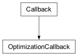Base class for Cplex optimization callback classes.
- class ContinuousCallback[source]¶
Bases:
OptimizationCallback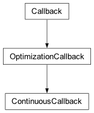Subclassable class for Cplex continuous callbacks.
When Cplex is solving a problem by a simplex or barrier method, this callback will be called after the simplex or barrier callback, if any such callbacks are registered.
During concurrent optimization, CPLEX calls the user-written callback only in the main thread, not in other concurrent threads.
- Undocumented:
__init__, _wherefrom
- class SimplexCallback[source]¶
Bases:
ContinuousCallback
Subclassable class for Cplex simplex callback classes.
This callback will be used during execution of the primal simplex, dual simplex, or quadratic simplex algorithms.
- Undocumented:
__init__
- class BarrierCallback[source]¶
Bases:
ContinuousCallback
Subclassable class for Cplex barrier callback classes.
This callback will be used during execution of the barrier or quadratic barrier algorithms.
- Undocumented:
__init__
- class CrossoverCallback[source]¶
Bases:
OptimizationCallback
Subclassable class for Cplex crossover callback classes.
This callback will be used during execution of a crossover algorithm.
- Undocumented:
__init__
- class QualityMetric[source]¶
Bases:
ConstantClass
Constants defining metrics for the quality of the MIP solve.
- kappa_stable = 127¶
- kappa_suspicious = 128¶
- kappa_unstable = 129¶
- kappa_illposed = 130¶
- kappa_max = 131¶
- kappa_attention = 132¶
- class CutType[source]¶
Bases:
ConstantClass
Arguments to MIPInfoCallback.get_num_cuts().
- cover = 108¶
- GUB_cover = 111¶
- flow_cover = 110¶
- clique = 107¶
- fractional = 115¶
- MIR = 120¶
- flow_path = 119¶
- disjunctive = 117¶
- implied_bound = 112¶
- zero_half = 122¶
- multi_commodity_flow = 126¶
- lift_and_project = 133¶
- user = 134¶
- table = 135¶
- solution_pool = 136¶
- benders = 137¶
- class MIPInfoCallback[source]¶
Bases:
OptimizationCallback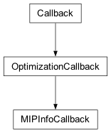Subclassable class for MIP informational callback classes.
This callback will be used when CPLEX is solving a MIP problem.
- Undocumented:
__init__
- quality_metric = <cplex.callbacks.QualityMetric object>¶
See
QualityMetric()
- get_num_quadratic_constraints()[source]¶
Returns the number of quadratic constraints in the problem.
- get_incumbent_linear_slacks(*args)[source]¶
Returns a set of linear slacks for the incumbent solution.
Can be called by four forms.
- self.get_incumbent_linear_slacks()
return all linear slack values from the incumbent solution.
- self.get_incumbent_linear_slacks(i)
i must be a linear constraint name or index. Returns the slack values associated with the linear constraint whose index or name is i.
- self.get_incumbent_linear_slacks(s)
s must be a sequence of linear constraint names or indices. Returns the slack values associated with the linear constraints with indices the members of s. Equivalent to [self.get_incumbent_linear_slacks(i) for i in s]
- self.get_incumbent_linear_slacks(begin, end)
begin and end must be linear constraint indices with begin <= end or linear constraint names whose indices respect this order. Returns the slack values associated with the linear constraints with indices between begin and end, inclusive of end. Equivalent to self.get_incumbent_linear_slacks(range(begin, end + 1)).
- get_incumbent_quadratic_slacks(*args)[source]¶
Returns a set of quadratic slacks for the incumbent solution.
Can be called by four forms.
- self.get_incumbent_quadratic_slacks()
- return all quadratic slack values from the incumbent
solution.
- self.get_incumbent_quadratic_slacks(i)
i must be a quadratic constraint name or index. Returns the slack values associated with the quadratic constraint whose index or name is i.
- self.get_incumbent_quadratic_slacks(s)
s must be a sequence of quadratic constraint names or indices. Returns the slack values associated with the quadratic constraints with indices the members of s. Equivalent to [self.get_incumbent_quadratic_slacks(i) for i in s]
- self.get_incumbent_quadratic_slacks(begin, end)
begin and end must be quadratic constraint indices or quadratic constraint names. Returns the slack values associated with the quadratic constraints with indices between begin and end, inclusive of end. Equivalent to self.get_incumbent_quadratic_slacks(range(begin, end + 1)).
- get_incumbent_values(*args)[source]¶
Returns the variable values of the incumbent solution.
There are four forms by which get_incumbent_values may be called.
- self.get_incumbent_values()
returns the entire incumbent solution
- self.get_incumbent_values(i)
i must be a variable index or name. Returns the value of the variable with index i in the incumbent solution.
- self.get_incumbent_values(s)
s must be a sequence of variables indices or names. Returns a list of the values of the variables with indices the members of s, in the same order as they appear in s. Equivalent to [self.get_incumbent_values(i) for i in s]
- self.get_incumbent_values(begin, end)
begin and end must be variable indices or variable names. Returns a list of the values of the variables with indices between begin and end, inclusive of end. Equivalent to self.get_incumbent_values(range(begin, end + 1))
- get_MIP_relative_gap()[source]¶
Returns the current relative MIP gap.
Accesses the current relative gap, like the routine CPXgetmiprelgap in the Callable Library. See CPXgetcallbackinfo and CPXgetmiprelgap in the Callable Library Reference Manual for more detail.
- get_float_quality(which)[source]¶
Returns a measure of the quality of the MIP solution as a floating point value.
The measure of the quality of a solution must be an attribute of self.quality_metric corresponding to a floating point quality metric. Such metrics include:
self.quality_metric.kappa_stable self.quality_metric.kappa_suspicious self.quality_metric.kappa_unstable self.quality_metric.kappa_illposed self.quality_metric.kappa_max self.quality_metric.kappa_attention
- class MIPCallback[source]¶
Bases:
MIPInfoCallback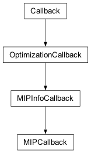Subclassable class for MIP callback classes.
This callback will be used when CPLEX is solving a MIP problem.
- Undocumented:
__init__, _get_node_info, _get_seq_info
- get_objective_coefficients(*args)[source]¶
Returns the coefficients of the linear objective function.
There are four forms by which get_objective_coefficients may be called.
- self.get_objective_coefficients()
returns the entire objective function.
- self.get_objective_coefficients(i)
i must be a variable index or name. Returns the objective coefficient of the variable with index i.
- self.get_objective_coefficients(s)
s must be a sequence of variable indices or names. Returns a list of the objective coefficients of the variables with indices the members of s, in the same order as they appear in s. Equivalent to [self.get_objective_coefficients(i) for i in s]
- self.get_objective_coefficients(begin, end)
begin and end must be variable indices or variable names. Returns a list of the objective coefficients of variables with indices between begin and end, inclusive of end. Equivalent to self.get_objective_coefficients(range(begin, end + 1))
- get_current_node_depth()[source]¶
Returns the depth of the current node in the search tree.
The root node has depth 0 (zero). The depth of other nodes is defined recursively as the depth of their parent node plus one. In other words, the depth of a node is its distance in terms of the number of branches from the root.
- class FeasibilityStatus[source]¶
Bases:
ConstantClass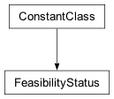Feasibility status codes.
- feasible = 0¶
- implied_feasible = 2¶
- infeasible = 1¶
- class ControlCallback[source]¶
Bases:
MIPCallback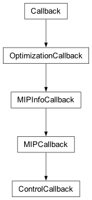Base class for Cplex MIP control callback classes.
- Undocumented:
__init__
- feasibility_status = <cplex.callbacks.FeasibilityStatus object>¶
- get_pseudo_costs(*args)[source]¶
Returns the current pseudo costs.
There are four forms by which get_pseudo_costs may be called.
- self.get_pseudo_costs()
- returns a list of pairs with the pseudo costs for all the
variables.
- self.get_pseudo_costs(i)
i must be a variable index or name. Returns a pair (up, down), where up is the up pseudo cost and down is the down pseudo cost of branching on the variable i.
- self.get_pseudo_costs(s)
s must be a sequence of variable indices or names. Returns a list of pairs (up, down) of pseudo costs of branching on the variables with indices the members of s, in the same order as they appear in s. Equivalent to [self.get_pseudo_costs(i) for i in s]
- self.get_pseudo_costs(begin, end)
begin and end must be variable indices or variable names. Returns a list of pairs (up, down) of pseudo costs of branching on the variables with indices between begin and end, inclusive of end. Equivalent to self.get_pseudo_costs(range(begin, end + 1))
- get_feasibilities(*args)[source]¶
Returns the current integer feasibility status.
There are four forms by which get_feasibilities may be called.
The return values are attributes of self.feasibility_status.
- self.get_feasibilities()
returns a list with the feasibility status for all the variables.
- self.get_feasibilities(i)
i must be a variable index or name. Returns the feasibility status of the variable with index i.
- self.get_feasibilities(s)
s must be a sequence of variable indices or names. Returns a list of the feasibility statuses of the variables with indices the members of s, in the same order as they appear in s. Equivalent to [self.get_feasibilities(i) for i in s]
- self.get_feasibilities(begin, end)
begin and end must be variable indices or variable names. Returns a list of the feasibility statuses of the variables with indices between begin and end, inclusive of end. Equivalent to self.get_feasibilities(range(begin, end + 1))
- Note
Before you call this method from a solve callback, a solution must exist. That is, you must first create the solution by calling a CPLEX optimization method, and then you must verify that this optimization method generated a solution by checking its return value before you call the method get_feasibilities.
- get_lower_bounds(*args)[source]¶
Returns the lower bounds at the current node.
There are four forms by which get_lower_bounds may be called.
- self.get_lower_bounds()
returns a list with the lower bounds for all the variables.
- self.get_lower_bounds(i)
i must be a variable index or name. Returns the lower bound of the variable with index i.
- self.get_lower_bounds(s)
s must be a sequence of variable indices or names. Returns a list of the lower bounds of the variables with indices the members of s, in the same order as they appear in s. Equivalent to [self.get_lower_bounds(i) for i in s]
- self.get_lower_bounds(begin, end)
begin and end must be variable indices or variable names. Returns a list of the lower bounds of the variables with indices between begin and end, inclusive of end. Equivalent to self.get_lower_bounds(range(begin, end + 1))
- get_upper_bounds(*args)[source]¶
Returns the upper bounds at the current node.
There are four forms by which get_upper_bounds may be called.
- self.get_upper_bounds()
returns a list with the upper bounds for all the variables.
- self.get_upper_bounds(i)
i must be a variable index or name. Returns the upper bound of the variable with index i.
- self.get_upper_bounds(s)
s must be a sequence of variable indices or names. Returns a list of the upper bounds of the variables with indices the members of s, in the same order as they appear in s. Equivalent to [self.get_upper_bounds(i) for i in s]
- self.get_upper_bounds(begin, end)
begin and end must be variable indices or variable names. Returns a list of the upper bounds of the variables with indices between begin and end, inclusive of end. Equivalent to self.get_upper_bounds(range(begin, end + 1))
- get_node_data()[source]¶
Returns the user handle for the current node.
Returns None if no handle is set for the node.
- set_node_data(data)[source]¶
Set the user handle for the current node.
Returns the user handle previously set for this node (or None if no handle was set).
- get_linear_slacks(*args)[source]¶
Returns a set of linear slacks for the solution at the current node.
Can be called by four forms.
- self.get_linear_slacks()
return all linear slack values from the problem at the current node.
- self.get_linear_slacks(i)
i must be a linear constraint name or index. Returns the slack values associated with the linear constraint whose index or name is i.
- self.get_linear_slacks(s)
s must be a sequence of linear constraint names or indices. Returns the slack values associated with the linear constraints with indices the members of s. Equivalent to [self.get_linear_slacks(i) for i in s]
- self.get_linear_slacks(begin, end)
begin and end must be linear constraint indices with begin <= end or linear constraint names whose indices respect this order. Returns the slack values associated with the linear constraints with indices between begin and end, inclusive of end. Equivalent to self.get_linear_slacks(range(begin, end + 1)).
- get_quadratic_slacks(*args)[source]¶
Returns a set of quadratic slacks for the solution at the current node.
Can be called by four forms.
- self.get_quadratic_slacks()
return all quadratic slack values from the problem at the current node.
- self.get_quadratic_slacks(i)
i must be a quadratic constraint name or index. Returns the slack values associated with the quadratic constraint whose index or name is i.
- self.get_quadratic_slacks(s)
s must be a sequence of quadratic constraint names or indices. Returns the slack values associated with the quadratic constraints with indices the members of s. Equivalent to [self.get_quadratic_slacks(i) for i in s]
- self.get_quadratic_slacks(begin, end)
begin and end must be quadratic constraint indices or quadratic constraint names. Returns the slack values associated with the quadratic constraints with indices between begin and end, inclusive of end. Equivalent to self.get_quadratic_slacks(range(begin, end + 1)).
- get_values(*args)[source]¶
Returns the solution values at the current node.
In the case that the node LP is unbounded, this method returns a vector that corresponds to an unbounded direction, scaled so that at least one of its elements has magnitude cplex.infinity. Thus, often the vector can be used directly, for example to separate a lazy constraint. However, due to the presence of large values in the vector care must be taken to avoid potential numerical errors. If in doubt, rescale the vector, and use it as an unbounded ray rather than a primal vector.
There are four forms by which get_values may be called.
- self.get_values()
returns the entire primal solution vector.
- self.get_values(i)
i must be a variable index or name. Returns the solution value of the variable with index i.
- self.get_values(s)
s must be a sequence of variable indices or names. Returns a list of the solution values of the variables with indices the members of s, in the same order as they appear in s. Equivalent to [self.get_values(i) for i in s]
- self.get_values(begin, end)
begin and end must be variable indices or variable names. Returns a list of the solution values of variables with indices between begin and end, inclusive of end. Equivalent to self.get_values(range(begin, end + 1))
- get_SOS_feasibilities(*args)[source]¶
Returns the current special ordered set feasibility status.
There are four forms by which get_SOS_feasibilities may be called.
Returns 1 if the SOS is feasible and 0 if it is not.
- self.get_SOS_feasibilties()
Returns the feasibility statuses of all the special ordered sets.
- self.get_SOS_feasibilities(i)
i must be a SOS index or name. Returns the feasibility status of the special ordered set with index i.
- self.get_SOS_feasibilities(s)
s must be a sequence of SOS indices or names. Returns a list of the feasibility statuses of the special ordered sets with indices the members of s, in the same order as they appear in s. Equivalent to [self.get_SOS_feasibilities(i) for i in s]
- self.get_SOS_feasibilities(begin, end)
begin and end must be SOS indices or SOS names. Returns a list of the feasibility statuses of the special ordered sets with indices between begin and end, inclusive of end. Equivalent to self.get_SOS_feasibilities(range(begin, end + 1))
- Note
Before you call this method from a solve callback, a solution must exist. That is, you must first create the solution by calling a CPLEX optimization method, and then you must verify that this optimization method generated a solution by checking its return value before you call the method get_SOS_feasibilities.
- class BranchType[source]¶
Bases:
ConstantClass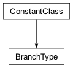Constants defining types of branches.
- any = 'A'¶
- SOS1 = '1'¶
- SOS2 = '2'¶
- variable = '0'¶
- class BranchCallback[source]¶
Bases:
ControlCallback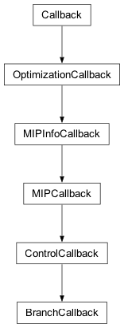Subclassable class for branch callback classes.
The user must be careful when using this class. Pruning a valid node can prune the optimal solution. Also, choosing a different branching variable can result in placing an invalid bound on a variable, in case the variable was already restricted to other bounds before.
In particular, the user must not branch on variables that are implied feasible. ImpliedFeasible specifies that the variable has been presolved out. It will be feasible when all other integer variables are integer feasible. Branching on such variables can cut off feasible solutions.
If the user intends to branch on continuous variables, the user must disable dual presolve reductions. To disable dual presolve reductions, set the parameter to control primal and dual reduction type, parameters.preprocessing.reduce, either to the value 1 (one) (that is, CPX_PREREDUCE_PRIMALONLY) or to the value 0 (zero) (that is, CPX_PREREDUCE_NOPRIMALORDUAL).
Also, if the user intends to branch on continuous variables, the user must turn off reductions that may interfere with crushing or uncrushing. This is parameters.preprocessing.reformulations.
By design, the CPLEX branch callback calculates and provides the branching decisions that CPLEX would make in case the user does not create any branches in the callback. Depending on variable selection and other features of your model, the computation of these candidate branches can be time-consuming. Consequently, if you know that you will never use the branching candidates suggested by CPLEX, then you can save time by disabling such features as strong branching. This callback will be used prior to branching at a node in the branch and cut tree.
- Undocumented:
__init__
- branch_type = <cplex.callbacks.BranchType object>¶
See
BranchType()
- get_branch(which_branch)[source]¶
Returns one of the candidate branches at the current node.
which_branch must be an integer such that 0 <= which_branch < self.get_num_branches().
The return value of get_branch is a tuple t with two entries. The first entry is the node estimate for the specified branch. The second entry is a list of (var, dir, bnd) triples, where var is the index of a variable whose bound will change, bnd is the new bound, and dir is one of “L”, “U”, and “B”, indicating that the branch will change the lower bound, the upper bound, or both, respectively.
- get_branch_type()[source]¶
Returns the type of the branch.
One of the following: self.branch_type.any self.branch_type.SOS1 self.branch_type.SOS2 self.branch_type.variable
- make_branch(objective_estimate, variables=None, constraints=None, node_data=None)[source]¶
Makes a new branch with the specified data.
objective_estimate is a float representing the estimated objective value resulting from the specified branch.
variables is a sequence of (var, dir, bnd) triples specifying the variables on which to branch. var must be an index of a variable, dir must be one of “L” and “U”, indicating that the bound is a lower or upper bound, respectively, and bnd is an integer specifying the new bound for the variable.
constraints is a sequence of (vec, sense, rhs) triples specifying the constraints with which to branch. vec must be either an instance of SparsePair or a sequence with two entries, the first of which specifies the indices and the second of which specifies the values of the constraint. rhs must be a float determining the righthand side of the constraint. sense must be one of “L”, “G”, or “E”, specifying whether the constraint is a less-than-or-equal-to (<=), greater-than-or-equal-to (>=), or equality constraint.
node_data may be any object to be associated with the created node. It can be queried by the get_node_data methods of the IncumbentCallback class and the NodeCallback class.
- make_cplex_branch(which_branch, node_data=None)[source]¶
Replicates a CPLEX branch.
This method replicates the n-th branch that CPLEX would create at the current node. The purpose of this method is to branch exactly like CPLEX, but at the same time attach a user object to the newly created node.
which_branch must be an integer such that 0 <= which_branch < self.get_num_branches().
node_data may be any object to be associated with the created node. It can be queried by the get_node_data methods of various callback classes.
This method returns the sequence number of the newly created node.
- class CutCallback[source]¶
Bases:
ControlCallback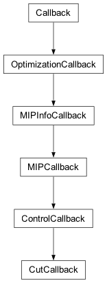Base class for user cut and lazy constraint callback classes.
- Undocumented:
add, add_local
- class UseConstraint[source]¶
Bases:
ConstantClass
Constants to specify when to use the added constraint
- force = 0¶
- purge = 1¶
- class LazyConstraintCallback[source]¶
Bases:
CutCallback
Subclassable class for lazy constraint callback classes.
This callback will be used when CPLEX finds a new integer feasible solution and when CPLEX finds that the LP relaxation at the current node is unbounded.
Note
The lazy constraint callback may be invoked during MIP start processing. In that case get_solution_source returns mip_start_solution. When this value is returned some special considerations apply:
MIP start processing occurs very early in the solution process. At this point no search tree is setup yet and there are no search tree nodes yet. Consequently, a lot of the callback methods that require a node context will fail in this situation.
Lazy constraints separated when processing a MIP start will be discarded after that MIP start has been processed. This means that the callback may have to separate the same constraint again for the next MIP start or for a solution that is found later in the solution process.
- Undocumented:
__init__
- use_constraint = <cplex.callbacks.UseConstraint object>¶
See
UseConstraint()
- add(constraint, sense, rhs, use=0)[source]¶
Adds a linear constraint to the current subproblem.
constraint must be either a SparsePair instance or a list of two lists, the first of which specifies variables, the second of which specifies the values of the constraint.
sense must be a single-character string; (“L”, “G”, “E”)
rhs is a float, specifying the righthand side of the constraint.
use indicates under what circumstances the constraint should be used. It can take the following values:
self.use_constraint.force (default) : force CPLEX to use the constraint self.use_constraint.purge : allow CPLEX to purge the constraint
When you add a lazy constraint with the nondefault value purge, you authorize CPLEX to purge (that is, to eliminate) the lazy constraint under certain circumstances, for example, if the lazy constraint becomes slack. Consequently, in view of such purging, you must not assume that any previously added constraints are still in current relaxation. In other words, the purged lazy constraint may be violated in subsequent relaxations.
- add_local(constraint, sense, rhs)[source]¶
Adds a linear local constraint to the current subproblem.
A local constraint is a constraint that will only be added to the problem at the current node and the subtree rooted by the current node. It will not be added to the constraint matrix of the original model.
constraint must be either a SparsePair instance or a list of two lists, the first of which specifies variables, the second of which specifies the values of the constraint.
sense must be a single-character string; (“L”, “G”, “E”)
rhs is a float, specifying the righthand side of the constraint.
- is_unbounded_node()[source]¶
Returns True if the current LP relaxation is unbounded, False otherwise.
- get_solution_source()[source]¶
Returns the source of the solution for which the lazy constraint callback was invoked.
The possible return values are:
IncumbentCallback.solution_source.node_solution: The integral solution is the solution to the LP relaxation of a node in the MIP search tree.
IncumbentCallback.solution_source.heuristic_solution: The integral solution has been found by a CPLEX internal heuristic.
IncumbentCallback.solution_source.mipstart_solution: The integral solution has been found during MIP start processing.
- class UseCut[source]¶
Bases:
ConstantClass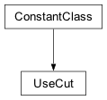Constants to specify when to use the added cut.
- force = 0¶
- purge = 1¶
- filter = 2¶
- class UserCutCallback[source]¶
Bases:
CutCallback
Subclassable class for lazy constraint callback classes.
This callback will be used within the cut loop that CPLEX calls at each node of the branch and cut algorithm. It will be called once after CPLEX has ended its own cut generation loop so that the user can specify additional cuts to be added to the cut pool.
- Undocumented:
__init__
- add(cut, sense, rhs, use=0)[source]¶
Adds a linear cut to to the current subproblem.
cut must be either a SparsePair instance or a list of two lists, the first of which specifies variables, the second of which specifies the values of the cut.
sense must be a single-character string; (“L”, “G”, “E”)
rhs is a float, specifying the righthand side of the cut.
use indicates under what circumstances the cut should be used. It can take the following values
self.use_cut.force (default) : force CPLEX to use the cut self.use_cut.purge : allow CPLEX to purge the cut self.use_cut.filter : treat as cuts CPLEX creates
- add_local(cut, sense, rhs)[source]¶
Adds a linear local cut to the current subproblem.
A local cut is a cut that is only valid at the current node and the subtree rooted by the current node. It does not need to be globally valid.
cut must be either a SparsePair instance or a list of two lists, the first of which specifies variables, the second of which specifies the values of the cut.
sense must be a single-character string; (“L”, “G”, “E”)
rhs is a float, specifying the righthand side of the cut.
- class MethodType[source]¶
Bases:
ConstantClass
Constants defining methods for solving the node LP.
- primal = 1¶
- dual = 2¶
- barrier = 4¶
- network = 3¶
- class HSCallback[source]¶
Bases:
ControlCallback
Base class for heuristic and solve callback classes.
- status = <cplex._internal._subinterfaces.SolutionStatus object>¶
- method = <cplex.callbacks.MethodType object>¶
See
MethodType()
- get_cplex_status()[source]¶
Returns the solution status of the current subproblem.
Returns an attribute of self.status.
- is_dual_feasible()[source]¶
Returns whether the solution of the current subproblem is dual feasible.
- is_primal_feasible()[source]¶
Returns whether the solution of the current subproblem is primal feasible.
- solve(alg=2)[source]¶
Solves the current subproblem.
The value of alg, if specified, determines the algorithm to use to solve the current subproblem.
self.method.primal : primal simplex
self.method.dual : dual simplex
self.method.barrier : barrier
self.method.network : network
If this method generates a feasible solution it returns True, otherwise it returns False.
- class HeuristicCallback[source]¶
Bases:
HSCallback
Subclassable class for heuristic callback classes.
This callback will be used after solving each subproblem and at the root node before each round of cuts is added to the problem and resolved.
- Undocumented:
__init__
- set_bounds(*args)[source]¶
Sets the bounds for a set of variables.
Can be called by two forms.
- self.set_bounds(i, lb, ub)
i must be a variable name or index and lb and ub must be real numbers. Sets the lower bound and upper bound of the variable whose index or name is i to lb and ub, respectively.
- self.set_lower_bounds(seq_of_triples)
seq_of_triples must be a list or tuple of tuples (i, lb, ub), each of which consists of a variable name or index and two real numbers. Sets the bounds of the specified variables to the corresponding values. Equivalent to [self.set_lower_bounds(triple[0], triple[1], triple[2]) for triple in seq_of_triples].
- Note
The variables specified must not have been removed by presolve.
- Note
These bound changes affect only the problem at the current node.
- set_solution(solution, objective_value=None)[source]¶
Sets a solution to be used as the incumbent.
solution is either an instance of SparsePair or a sequence of length two. If it is a sequence, the first entry is a sequence of variable indices or names whose values are to be changed and the second entry is a sequence of floats with the corresponding new solution values. Variables whose indices are not specified remain unchanged.
If objective_value is specified, it is taken as the objective value of the new solution. Otherwise, the objective value is computed.
Do not call this method multiple times. Calling it again will overwrite any previously specified solution.
- class SolveCallback[source]¶
Bases:
HSCallback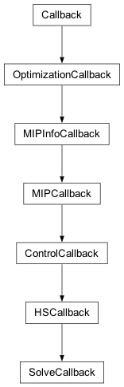Subclassable class for solve callback classes.
This callback can be used to solve node relaxations during branch and cut search.
- Undocumented:
__init__
- set_start(primal=None, dual=None)[source]¶
Sets the starting vectors for the next solve.
The arguments primal and dual must either be instances of SparsePair or sequences of length two. If they are sequences, the first entry is a sequence of indices or names specifying the columns or rows whose values are to be set, and the second entry is a sequence of floats with the corresponding new values.
If primal is specified but dual is not, no dual values will be stored. If dual is specified but primal is not, no primal values will be stored.
Variables whose indices are not specified will be set to 0.0.
- Note
If presolve is enabled, attempting to set dual values in this method will raise an exception.
- class SolutionSource[source]¶
Bases:
ConstantClass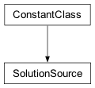Attributes defining possible solution sources.
- node_solution = 111¶
- heuristic_solution = 117¶
- user_solution = 118¶
- mipstart_solution = 119¶
- class IncumbentCallback[source]¶
Bases:
MIPCallback
Subclassable class for incumbent callback classes.
This callback will be used after each new potential incumbent is found. If the callback is used to reject incumbents, the user must set the parameter c.parameters.preprocessing.reduce either to the value 1 (one) to restrict presolve to primal reductions only or to 0 (zero) to disable all presolve reductions. This setting of the parameter is not necessary if the incumbent callback is used for other purposes.
- Note
The incumbent callback may be invoked during MIP start processing. In that case get_solution_source will return mip_start_solution. In this situation the following special consideration applies:
MIP start processing occurs very early in the solution process. At this point no search tree is setup yet and there are no search tree nodes yet. Consequently, a lot of the callback methods that require a node context will fail in this situation.
- Undocumented:
__init__
- solution_source = <cplex.callbacks.SolutionSource object>¶
See
SolutionSource()
- get_node_data()[source]¶
Returns the user handle for the current node.
Returns None if no handle is set for the node.
- set_node_data(data)[source]¶
Set the user handle for the current node.
Returns the user handle previously set for this node (or None if no handle was set).
- get_linear_slacks(*args)[source]¶
Returns a set of linear slacks for the solution at the current node.
Can be called by four forms.
- self.get_linear_slacks()
return all linear slack values from the problem at the current node.
- self.get_linear_slacks(i)
i must be a linear constraint name or index. Returns the slack values associated with the linear constraint whose index or name is i.
- self.get_linear_slacks(s)
s must be a sequence of linear constraint names or indices. Returns the slack values associated with the linear constraints with indices the members of s. Equivalent to [self.get_linear_slacks(i) for i in s]
- self.get_linear_slacks(begin, end)
begin and end must be linear constraint indices with begin <= end or linear constraint names whose indices respect this order. Returns the slack values associated with the linear constraints with indices between begin and end, inclusive of end. Equivalent to self.get_linear_slacks(range(begin, end + 1)).
- get_quadratic_slacks(*args)[source]¶
Return a set of quadratic slacks for the solution at the current node.
Can be called by four forms.
- self.get_quadratic_slacks()
return all quadratic slack values from the problem at the current node.
- self.get_quadratic_slacks(i)
i must be a quadratic constraint name or index. Returns the slack values associated with the quadratic constraint whose index or name is i.
- self.get_quadratic_slacks(s)
s must be a sequence of quadratic constraint names or indices. Returns the slack values associated with the quadratic constraints with indices the members of s. Equivalent to [self.get_quadratic_slacks(i) for i in s]
- self.get_quadratic_slacks(begin, end)
begin and end must be quadratic constraint indices or quadratic constraint names. Returns the slack values associated with the quadratic constraints with indices between begin and end, inclusive of end. Equivalent to self.get_quadratic_slacks(range(begin, end + 1)).
- get_values(*args)[source]¶
Return the potential incumbent solution values.
There are four forms by which get_values may be called.
- self.get_values()
returns the entire potential incumbent.
- self.get_values(i)
i must be a variable index or name. Returns the potential incumbent value of the variable with index i.
- self.get_values(s)
s must be a sequence of variable indices or names. Returns a list of the potential incumbent values of the variables with indices the members of s, in the same order as they appear in s. Equivalent to [self.get_values(i) for i in s]
- self.get_values(begin, end)
begin and end must be variable indices or variable names. Returns a list of the potential incumbent values of variables with indices between begin and end, inclusive of end. Equivalent to self.get_values(range(begin, end + 1))
- get_solution_source()[source]¶
Returns the source of the solution for which the incumbent callback was invoked.
The possible return values are:
self.solution_source.node_solution: The integral solution is the solution to the LP relaxation of a node in the MIP search tree.
self.solution_source.heuristic_solution: The integral solution has been found by a CPLEX internal heuristic.
self.solution_source.user_solution: The integral solution has been found by the user in the heuristic callback.
self.solution_source.mipstart_solution: The integral solution has been found during MIP start processing.
- class NodeCallback[source]¶
Bases:
MIPCallback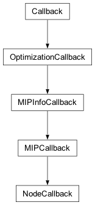Subclassable class for node callback classes.
This callback will be used before CPLEX enters a node, and can select a different node to be entered instead.
- Undocumented:
__init__, __conditionally_convert
- get_branch_variable(which_node)[source]¶
Returns the index of the variable used to branch at node which_node.
which_node may either be an integer specifying the index number of the desired node, or a 1-tuple whose entry is an integer specifying the sequence number of the desired node.
- get_depth(which_node)[source]¶
Returns the depth in the search tree of node which_node.
which_node may either be an integer specifying the index number of the desired node, or a 1-tuple whose entry is an integer specifying the sequence number of the desired node.
- get_current_node_depth()[source]¶
Returns the depth of the current node in the search tree.
This method always raises an exception since the node callback is not invoked in the context of any node.
- get_estimated_objective_value(which_node)[source]¶
Returns the estimated objective function value at node which_node.
which_node may either be an integer specifying the index number of the desired node, or a 1-tuple whose entry is an integer specifying the sequence number of the desired node.
- get_infeasibility_sum(which_node)[source]¶
Returns the sum of infeasibilities at node which_node.
which_node may either be an integer specifying the index number of the desired node, or a 1-tuple whose entry is an integer specifying the sequence number of the desired node.
- get_num_infeasibilities(which_node)[source]¶
Returns the number of infeasibilities at node which_node.
which_node may either be an integer specifying the index number of the desired node, or a 1-tuple whose entry is an integer specifying the sequence number of the desired node.
- get_node_data(which_node)[source]¶
Returns the handle set by the user for node which_node.
Returns None if no handle was set when the node was created.
which_node may either be an integer specifying the index number of the desired node, or a 1-tuple whose entry is an integer specifying the sequence number of the desired node.
- set_node_data(which_node, data)[source]¶
Set the user handle for the specified node.
Returns the user handle previously set for that node (or None if no handle was set).
- get_node_ID(which_node)[source]¶
Returns a one-tuple containing the sequence number of node which_node.
which_node must be an integer specifying the index number of the desired node.
- get_node_number(which_node)[source]¶
Returns the index number of node which_node.
which_node must be a 1-tuple whose entry is an integer specifying the sequence number of the desired node.
- class TuningCallback[source]¶
Bases:
Callback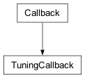Subclassable class for tuning callback classes.
This callback will be used during tuning.
For general information about tuning callbacks, see that topic in the CPLEX User’s Manual.
- Undocumented:
__init__
- class ContextType[source]¶
Bases:
ConstantClass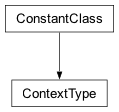The different contexts in which a generic callback can be invoked.
The values defined here serve two purposes:
They are returned from
Context.get_id()to indicate in which context a particular callback invocation happened.The bit-wise OR of these values specifies to
Cplex.set_callback()in which contexts CPLEX invokes the callback.See the reference manual of the CPLEX Callable Library (C API) for a more detailed description of the various contexts.
- thread_up = 2¶
See CPX_CALLBACKCONTEXT_THREAD_UP in the C API.
- thread_down = 4¶
See CPX_CALLBACKCONTEXT_THREAD_DOWN in the C API.
- local_progress = 8¶
See CPX_CALLBACKCONTEXT_LOCAL_PROGRESS in the C API.
- global_progress = 16¶
See CPX_CALLBACKCONTEXT_GLOBAL_PROGRESS in the C API.
- candidate = 32¶
See CPX_CALLBACKCONTEXT_CANDIDATE in the C API.
- relaxation = 64¶
See CPX_CALLBACKCONTEXT_RELAXATION in the C API.
- branching = 128¶
See CPX_CALLBACKCONTEXT_BRANCHING in the C API.
- class RelaxationFlags[source]¶
Bases:
ConstantClass
The flags that can be passed to
Context.get_relaxation_status().See the reference manual of the CPLEX Callable Library (C API) for a more detailed description of the various contexts.
- no_solve = 1¶
See CPX_RELAXATION_FLAG_NOSOLVE in the C API.
- class Context[source]¶
Bases:
object
Context for the generic callback.
An instance of this class defines the context in which a generic callback was invoked. It provides methods to query information and perform all actions that can be performed from a generic callback.
Note that an instance of this class is only valid during the execution of the callback into which it was passed. Don’t store a reference to the context across callback invocations.
See
Cplex.set_callback().- Undocumented:
__init__
- info = <cplex._internal._callbackinfoenum.CallbackInfo object>¶
See
CallbackInfo
- solution_strategy = <cplex._internal._solutionstrategyenum.SolutionStrategy object>¶
See
SolutionStrategy
- id = <cplex.callbacks.ContextType object>¶
See
ContextType
- relaxation_flags = <cplex.callbacks.RelaxationFlags object>¶
See
RelaxationFlags
- solution_status = <cplex._internal._subinterfaces.SolutionStatus object>¶
See
SolutionStatus
- get_id()[source]¶
Returns the context in which the current callback was invoked.
The return value will be one of the constants in
ContextType.
- in_thread_up()[source]¶
Returns True if the callback was invoked in context
ContextType.thread_up.It is a shortcut for checking whether
get_id()returnsContextType.thread_upor not.
- in_thread_down()[source]¶
Returns True if the callback was invoked in context
ContextType.thread_down.It is a shortcut for checking whether
get_id()returnsContextType.thread_downor not.
- in_local_progress()[source]¶
Returns True if the callback was invoked in context
ContextType.local_progress.It is a shortcut for checking whether
get_id()returnsContextType.local_progressor not.
- in_global_progress()[source]¶
Returns True if the callback was invoked in context
ContextType.global_progress.It is a shortcut for checking whether
get_id()returnsContextType.global_progressor not.
- in_candidate()[source]¶
Returns True if the callback was invoked in context
ContextType.candidate.It is a shortcut for checking whether
get_id()returnsContextType.candidateor not.
- in_relaxation()[source]¶
Returns True if the callback was invoked in context
ContextType.relaxation.It is a shortcut for checking whether
get_id()returnsContextType.relaxationor not.
- in_branching()[source]¶
Returns True if the callback was invoked in context
ContextType.branching.It is a shortcut for checking whether
get_id()returnsContextType.branchingor not.
- get_int_info(what)[source]¶
Returns a 32bit signed information value.
Potential values are listed in
Context.info. Note that in all contexts butContextType.global_progressthe information returned by the method is thread-local.See CPXcallbackgetinfoint in the Callable Library Reference Manual for more detail.
- get_long_info(what)[source]¶
Returns a 64bit signed information value.
Potential values are listed in
Context.info. Note that in all contexts butContextType.global_progressthe information returned by the method is thread-local.See CPXcallbackgetinfolong in the Callable Library Reference Manual for more detail.
- get_double_info(what)[source]¶
Returns a float information value.
Potential values are listed in
Context.info. Note that in all contexts butContextType.global_progressthe information returned by the method is thread-local.See CPXcallbackgetinfodbl in the Callable Library Reference Manual for more detail.
- abort()[source]¶
Aborts the optimization.
If you call this method then CPLEX will abort optimization at the next opportunity.
See CPXcallbackabort in the Callable Library Reference Manual for more detail.
- get_relaxation_point(*args)[source]¶
Returns the solution to the current relaxation.
This method can only be invoked if
get_id()returnsContextType.relaxationorContextType.branching. If invoked in a different context it will raise an exception.This method returns the values in the solution for the current relaxation for the variables specified by the arguments.
There are four forms by which get_relaxation_point may be called.
- self.get_relaxation_point()
returns the full solution vector.
- self.get_relaxation_point(i)
i must be a variable index or name. Returns the value of the variable with index or name i in the solution to the current relaxation.
- self.get_relaxation_point(s)
s must be a sequence of variable indices or names. Returns a list of the values of the variables with indices the members of s, in the same order as they appear in s. Equivalent to [self.get_relaxation_point(i) for i in s]
- self.get_relaxation_point(begin, end)
begin and end must be variable indices or variable names. Returns a list of solution values of variables with indices between begin and end, inclusive of end. Equivalent to self.get_relaxation_point(range(begin, end + 1)).
See CPXcallbackgetrelaxationpoint in the Callable Library Reference Manual for more detail.
- get_relaxation_objective()[source]¶
Returns the objective value of current relaxation.
This method can only be invoked if
get_id()returnsContextType.relaxationorContextType.branching. If invoked in a different context it will raise an exception.See CPXcallbackgetrelaxationpoint in the Callable Library Reference Manual for more detail.
- get_relaxation_status(flags=0)[source]¶
Returns the solution status of the relaxation LP.
Returns the solution status of the LP relaxation at the current node.
This method can only be invoked if
get_id()returnsContextType.relaxationorContextType.branching. If invoked in a different context it will raise an exception.See CPXcallbackgetrelaxationstatus in the Callable Library Reference Manual for more detail.
- make_branch(objective_estimate, variables=None, constraints=None)[source]¶
Makes a new branch with the specified data.
This method can only be invoked if
get_id()returnsContextType.branching. If invoked in a different context it will raise an exception.objective_estimate is a float representing the estimated objective value resulting from the specified branch.
variables is a sequence of (var, dir, bnd) tuples specifying the variables on which to branch. var must be an index of a variable, dir must be one of “L” and “U”, indicating that the bound is a lower or upper bound, respectively, and bnd is an integer specifying the new bound for the variable.
constraints is a sequence of (vec, sense, rhs) tuples specifying the constraints with which to branch. vec must be either an instance of
SparsePairor a sequence with two entries, the first of which specifies the indices and the second of which specifies the values of the constraint. rhs must be a float determining the righthand side of the constraint. sense must be one of “L”, “G”, or “E”, specifying whether the constraint is a less-than-or-equal-to (<=), greater-than-or-equal-to (>=), or equality constraint (=).The method returns an integer that uniquely identifies the newly created child node in the search tree.
Note that the children will be dropped if you call
prune_current_node()at the same node.See CPXcallbackmakebranch in the Callable Library Reference Manual for more detail.
- prune_current_node()[source]¶
Ask CPLEX to prune the current node from the search tree.
This method can only be invoked if
get_id()returnsContextType.relaxationorContextType.branching. If invoked in a different context it will raise an exception.The node is marked for pruning. As soon as the callback returns, CPLEX stops processing the node. In particular, no child nodes will be created from that node, even if you called
make_branch()to explicitly create new nodes.See CPXcallbackprunenode in the Callable Library Reference Manual for more detail.
- exit_cut_loop()[source]¶
Ask CPLEX to stop cutting plane separatation at the current node.
This method can only be invoked if
get_id()returnsContextType.relaxation. If invoked in a different context it will raise an exception.See CPXcallbackexitcutloop in the Callable Library Reference Manual for more detail.
- get_incumbent(*args)[source]¶
Returns the current incumbent solution.
The method returns the values in the current incumbent solution for the variables specified by the arguments.
There are four forms by which get_incumbent may be called.
- self.get_incumbent()
returns the full incumbent vector.
- self.get_incumbent(i)
i must be a variable index or name. Returns the value of the variable with index or name i in the current incumbent solution.
- self.get_incumbent(s)
s must be a sequence of variable indices or names. Returns a list of the values of the variables with indices the members of s, in the same order as they appear in s. Equivalent to [self.get_incumbent(i) for i in s]
- self.get_incumbent(begin, end)
begin and end must be variable indices or variable names. Returns a list of solution values of variables with indices between begin and end, inclusive of end. Equivalent to self.get_incumbent(range(begin, end + 1)).
See CPXcallbackgetincumbent in the Callable Library Reference Manual for more detail.
- get_incumbent_objective()[source]¶
Returns the objective value of the current incumbent.
The returned value may be a huge value (such as 1e75) to indicate that no incumbent was found yet. Consider using
get_int_info()withCallbackInfo.feasiblefirst to check whether there is an incumbent.See CPXcallbackgetincumbent in the Callable Library Reference Manual for more detail.
- is_candidate_point()[source]¶
Test if the callback was invoked for a candidate feasible point.
This method can only be invoked if
get_id()returnsContextType.candidate. If invoked in a different context it will raise an exception.This method returns true if the callback was invoked for a candidate feasible point. In that case the candidate feasible point can be examined using
get_candidate_point()andget_candidate_objective().See CPXcallbackcandidateispoint in the Callable Library Reference Manual for more detail.
- get_candidate_source()[source]¶
Get the source from which the current candidate solution originated.
The value returned is from IncumbentCallback.solution_source.
- get_candidate_point(*args)[source]¶
Returns the current candidate solution.
This method can only be invoked if
get_id()returnsContextType.candidateandis_candidate_point()returns true. If invoked in a different context it will raise an exception.This method returns the values in the current candidate solution for the variables specified by the arguments.
There are four forms by which get_candidate_point may be called.
- self.get_candidate_point()
returns the full solution vector.
- self.get_candidate_point(i)
i must be a variable index or name. Returns the value of the variable with index or name i in the current candidate solution.
- self.get_candidate_point(s)
s must be a sequence of variable indices or names. Returns a list of the values of the variables with indices the members of s, in the same order as they appear in s. Equivalent to [self.get_candidate_point(i) for i in s]
- self.get_candidate_point(begin, end)
begin and end must be variable indices or variable names. Returns a list of solution values of variables with indices between begin and end, inclusive of end. Equivalent to self.get_candidate_point(range(begin, end + 1))
See CPXcallbackgetcandidatepoint in the Callable Library Reference Manual for more detail.
- get_candidate_objective()[source]¶
Returns the objective value of current candidate solution.
This method can only be invoked if
get_id()returnsContextType.candidateandis_candidate_point()returns true. It will raise an exception if invoked in a different context.See CPXcallbackgetcandidatepoint in the Callable Library Reference Manual for more detail.
- is_candidate_ray()[source]¶
Test if the callback was invoked for an unbounded ray.
This method can only be invoked if
get_id()returnsContextType.candidate. If invoked in a different context it will raise an exception.This method returns true if the callback was invoked for an unbounded relaxation. In that case the unbounded ray can be obtained using
get_candidate_ray()and.See CPXcallbackcandidateisray in the Callable Library Reference Manual for more detail.
- get_candidate_ray(*args)[source]¶
Returns the current unbounded ray.
This method can only be invoked if
get_id()returnsContextType.candidateandis_candidate_ray()returns true. If invoked in a different context it will raise an exception.The method returns the values for in the unbounded ray for the variables specified by the arguments.
There are four forms by which get_candidate_ray may be called.
- self.get_candidate_ray()
returns the full ray vector.
- self.get_candidate_ray(i)
i must be a variable index or name. Returns the value of the variable with index or name i in the unbounded ray.
- self.get_candidate_ray(s)
s must be a sequence of variable indices or names. Returns a list of the values of the variables with indices the members of s, in the same order as they appear in s. Equivalent to [self.get_candidate_ray(i) for i in s]
- self.get_candidate_ray(begin, end)
begin and end must be variable indices or variable names. Returns a list of unbounded reay values of variables with indices between begin and end, inclusive of end. Equivalent to self.get_candidate_ray(range(begin, end + 1)).
See CPXcallbackgetcandidateray in the Callable Library Reference Manual for more detail.
- get_local_lower_bounds(*args)[source]¶
Returns the current local lower bounds.
This method can only be invoked if
get_id()returnsContextType.relaxation. If invoked in a different context it will raise an exception.There are four forms by which get_local_lower_bounds may be called.
- self.get_local_lower_bounds()
returns local lower bounds for all variables.
- self.get_local_lower_bounds(i)
i must be a variable index or name. Returns the local lower bound of the variable with index or name i.
- self.get_local_lower_bounds(s)
s must be a sequence of variable indices or names. Returns a list of the local lower bounds of the variables with indices the members of s, in the same order as they appear in s. Equivalent to [self.get_local_lower_bounds(i) for i in s]
- self.get_local_lower_bounds(begin, end)
begin and end must be variable indices or variable names. Returns a list of the local lower bounds of variables with indices between begin and end, inclusive of end. Equivalent to self.get_local_lower_bounds(range(begin, end + 1)).
See CPXcallbackgetlocallb in the Callable Library Reference Manual for more detail.
- get_local_upper_bounds(*args)[source]¶
Returns the current local upper bounds.
This method can only be invoked if
get_id()returnsContextType.relaxation. If invoked in a different context it will raise an exception.There are four forms by which get_local_upper_bounds may be called.
- self.get_local_upper_bounds()
returns local upper bounds for all variables.
- self.get_local_upper_bounds(i)
i must be a variable index or name. Returns the local upper bound of the variable with index or name i.
- self.get_local_upper_bounds(s)
s must be a sequence of variable indices or names. Returns a list of the local upper bounds of the variables with indices the members of s, in the same order as they appear in s. Equivalent to [self.get_local_upper_bounds(i) for i in s]
- self.get_local_upper_bounds(begin, end)
begin and end must be variable indices or variable names. Returns a list of the local upper bounds of variables with indices between begin and end, inclusive of end. Equivalent to self.get_local_upper_bounds(range(begin, end + 1)).
See CPXcallbackgetlocalub in the Callable Library Reference Manual for more detail.
- get_global_lower_bounds(*args)[source]¶
Returns the current globally valid lower bounds.
This method cannot be invoked if
get_id()returnsContextType.thread_uporContextType.thread_down.There are four forms by which get_global_lower_bounds may be called.
- self.get_global_lower_bounds()
returns global lower bounds for all variables.
- self.get_global_lower_bounds(i)
i must be a variable index or name. Returns the global lower bound of the variable with index or name i.
- self.get_global_lower_bounds(s)
s must be a sequence of variable indices or names. Returns a list of the global lower bounds of the variables with indices the members of s, in the same order as they appear in s. Equivalent to [self.get_global_lower_bounds(i) for i in s]
- self.get_global_lower_bounds(begin, end)
begin and end must be variable indices or variable names. Returns a list of the global lower bounds of variables with indices between begin and end, inclusive of end. Equivalent to self.get_global_lower_bounds(range(begin, end + 1)).
See CPXcallbackgetgloballb in the Callable Library Reference Manual for more detail.
- get_global_upper_bounds(*args)[source]¶
Returns the current globally valid upper bounds.
This method cannot be invoked if
get_id()returnsContextType.thread_uporContextType.thread_down.There are four forms by which get_global_upper_bounds may be called.
- self.get_global_upper_bounds()
returns global upper bounds for all variables.
- self.get_global_upper_bounds(i)
i must be a variable index or name. Returns the global upper bound of the variable with index or name i.
- self.get_global_upper_bounds(s)
s must be a sequence of variable indices or names. Returns a list of the global upper bounds of the variables with indices the members of s, in the same order as they appear in s. Equivalent to [self.get_global_upper_bounds(i) for i in s]
- self.get_global_upper_bounds(begin, end)
begin and end must be variable indices or variable names. Returns a list of the global upper bounds of variables with indices between begin and end, inclusive of end. Equivalent to self.get_global_upper_bounds(range(begin, end + 1)).
See CPXcallbackgetglobalub in the Callable Library Reference Manual for more detail.
- post_heuristic_solution(x, obj, strategy)[source]¶
Posts a feasible solution vector to CPLEX.
This method posts a (possibly partial) feasible solution to CPLEX. CPLEX may use this vector to find a new incumbent solution.
x is either a
SparsePairinstance or a list of two lists, the first of which specifies the variables (by index or name) and the second of which specifies the values.obj is an estimate for the objective function value of the solution provided by x.
strategy specifies how CPLEX should complete partial solutions. See
SolutionStrategyfor further details.See CPXcallbackpostheursoln in the Callable Library Reference Manual for more detail.
- add_user_cuts(cuts, senses, rhs, cutmanagement, local)[source]¶
Adds user cuts.
This method can only be invoked if
get_id()returnsContextType.relaxation. If invoked in a different context it will raise an exception.This method submits the specified user cuts to CPLEX.
cuts, senses, rhs, cutmanagement, local must all be lists of compatible dimensions. The first three specify the cuts to be added.
cuts must be either a list of
SparsePairinstances or a list of lists of two lists, the first of which specifies variables, the second of which specifies the values of the constraint.senses must be list of single-character strings; (“L”, “G”, “E”) It may also be one single string (the concatenation of the single character strings).
rhs is a list of floats, specifying the righthand side of the constraints.
cutmanagement must be a list of integer values specifying how CPLEX should treat each cut (see
UseCutconstants for further details).local must be a list of boolean values and specifies for each cut whether it is only locally valid (True) or globally valid (False).
See CPXcallbackaddusercuts in the Callable Library Reference Manual for more detail.
- add_user_cut(cut, sense, rhs, cutmanagement, local)[source]¶
Convenience wrapper for
add_user_cuts()that only adds a single cut.
- reject_candidate(constraints=None, senses=None, rhs=None)[source]¶
Rejects the current candidate solution.
This method can only be invoked if
get_id()returnsContextType.candidate. If invoked in a different context it will raise an exception.This method marks the current candidate solution as infeasible, potentially specifying additional constraints that cut it off.
If constraints, senses, and rhs are all None then the current candidate solution is just rejected. If any of the three is not None then all must be not None and all must have compatible dimensions. In that case the three arguments specify a set of constraints that cut off the current candidate solution. CPLEX may use this information to tighten the problem formulation and to avoid finding the same solution again. There is however no guarantee that CPLEX will actually use those additional constraints.
constraints must be either a list of
SparsePairinstances or a list of lists of two lists, the first of which specifies variables, the second of which specifies the values of the constraint.senses must be list of single-character strings; (“L”, “G”, “E”) It may also be one single string (the concatenation of the single character strings).
rhs is a list of floats, specifying the righthand side of the constraints.
See CPXcallbackrejectcandidate in the Callable Library Reference Manual for more detail.
- reject_candidate_local(constraints=None, senses=None, rhs=None)[source]¶
Rejects the current candidate solution.
This method can only be invoked if
get_id()returnsContextType.candidateand if the candidate was invoked for an integral node. If invoked in a different context it will raise an exception.This method marks the current candidate solution as infeasible, potentially specifying additional constraints that cut it off. The specified constraints are not required to be globally valid. They are only required to be valid in the subtree in which the callback was invoked.
If constraints, senses, and rhs are all None then the current candidate solution is just rejected. If any of the three is not None then all must be not None and all must have compatible dimensions. In that case the three arguments specify a set of constraints that cut off the current candidate solution. CPLEX may use this information to tighten the problem formulation and to avoid finding the same solution again. There is however no guarantee that CPLEX will actually use those additional constraints.
constraints must be either a list of
SparsePairinstances or a list of lists of two lists, the first of which specifies variables, the second of which specifies the values of the constraint.senses must be list of single-character strings; (“L”, “G”, “E”) It may also be one single string (the concatenation of the single character strings).
rhs is a list of floats, specifying the righthand side of the constraints.
See CPXcallbackrejectcandidatelocal in the Callable Library Reference Manual for more detail.
cplex.constant_class module¶
A base class for classes that contain groups of constants.

cplex.exceptions module¶
Error codes and Exceptions raised by the CPLEX Python API.
For documentation of CPLEX error codes, see the group optim.cplex.errorcodes in the reference manual of the CPLEX Callable Library, and the topic Interpreting Error Codes in the Overview of the APIs.
- exception CplexSolverError[source]¶
Bases:
CplexErrorClass for errors returned by the Callable Library functions.
self.args[0] : A string describing the error.
self.args[1] : The address of the environment that raised the error.
self.args[2] : The integer status code of the error.
- exception WrongNumberOfArgumentsError[source]¶
Bases:
CplexError,TypeErrorClass for errors involving the wrong number of arguments.
This exception is generally raised by methods that can accept a dynamic number of arguments, but also enforce certain rules (e.g., to be grouped in pairs, requires at least one argument, etc.).
- exception ErrorChannelMessage[source]¶
Bases:
CplexErrorClass for storing the last message on the error channel.
For internal use only.
cplex.model_info module¶
Modeling information IDs returned by the Callable Library.
This module defines symbolic names for the integer modeling information IDs returned by the Callable Library. The names to which the modeling information IDs are assigned are the same names used in the Callable Library, all of which begin with CPXMI. The modeling information IDs are accessible through the modeling assistance callback. These symbolic names can be used to test if a particular modeling issue has been detected.
See Cplex.set_modeling_assistance_callback.
- CPXMI_BIGM_COEF = 1040¶
See CPXMI_BIGM_COEF in the C API.
- CPXMI_BIGM_TO_IND = 1041¶
See CPXMI_BIGM_TO_IND in the C API.
- CPXMI_BIGM_VARBOUND = 1042¶
See CPXMI_BIGM_VARBOUND in the C API.
- CPXMI_CANCEL_TOL = 1045¶
See CPXMI_CANCEL_TOL in the C API.
- CPXMI_EPGAP_LARGE = 1038¶
See CPXMI_EPGAP_LARGE in the C API.
- CPXMI_EPGAP_OBJOFFSET = 1037¶
See CPXMI_EPGAP_OBJOFFSET in the C API.
- CPXMI_FEAS_TOL = 1043¶
See CPXMI_FEAS_TOL in the C API.
- CPXMI_FRACTION_SCALING = 1047¶
See CPXMI_FRACTION_SCALING in the C API.
- CPXMI_IND_NZ_LARGE_NUM = 1019¶
See CPXMI_IND_NZ_LARGE_NUM in the C API.
- CPXMI_IND_NZ_SMALL_NUM = 1020¶
See CPXMI_IND_NZ_SMALL_NUM in the C API.
- CPXMI_IND_RHS_LARGE_NUM = 1021¶
See CPXMI_IND_RHS_LARGE_NUM in the C API.
- CPXMI_IND_RHS_SMALL_NUM = 1022¶
See CPXMI_IND_RHS_SMALL_NUM in the C API.
- CPXMI_KAPPA_ILLPOSED = 1035¶
See CPXMI_KAPPA_ILLPOSED in the C API.
- CPXMI_KAPPA_SUSPICIOUS = 1033¶
See CPXMI_KAPPA_SUSPICIOUS in the C API.
- CPXMI_KAPPA_UNSTABLE = 1034¶
See CPXMI_KAPPA_UNSTABLE in the C API.
- CPXMI_LB_LARGE_NUM = 1003¶
See CPXMI_LB_LARGE_NUM in the C API.
- CPXMI_LB_SMALL_NUM = 1004¶
See CPXMI_LB_SMALL_NUM in the C API.
- CPXMI_LC_NZ_LARGE_NUM = 1023¶
See CPXMI_LC_NZ_LARGE_NUM in the C API.
- CPXMI_LC_NZ_SMALL_NUM = 1024¶
See CPXMI_LC_NZ_SMALL_NUM in the C API.
- CPXMI_LC_RHS_LARGE_NUM = 1025¶
See CPXMI_LC_RHS_LARGE_NUM in the C API.
- CPXMI_LC_RHS_SMALL_NUM = 1026¶
See CPXMI_LC_RHS_SMALL_NUM in the C API.
- CPXMI_MULTIOBJ_COEFFS = 1062¶
See CPXMI_MULTIOBJ_COEFFS in the C API.
- CPXMI_MULTIOBJ_LARGE_NUM = 1058¶
See CPXMI_MULTIOBJ_LARGE_NUM in the C API.
- CPXMI_MULTIOBJ_MIX = 1063¶
See CPXMI_MULTIOBJ_MIX in the C API.
- CPXMI_MULTIOBJ_OPT_TOL = 1060¶
See CPXMI_MULTIOBJ_OPT_TOL in the C API.
- CPXMI_MULTIOBJ_SMALL_NUM = 1059¶
See CPXMI_MULTIOBJ_SMALL_NUM in the C API.
- CPXMI_NZ_LARGE_NUM = 1009¶
See CPXMI_NZ_LARGE_NUM in the C API.
- CPXMI_NZ_SMALL_NUM = 1010¶
See CPXMI_NZ_SMALL_NUM in the C API.
- CPXMI_OBJ_LARGE_NUM = 1001¶
See CPXMI_OBJ_LARGE_NUM in the C API.
- CPXMI_OBJ_SMALL_NUM = 1002¶
See CPXMI_OBJ_SMALL_NUM in the C API.
- CPXMI_OPT_TOL = 1044¶
See CPXMI_OPT_TOL in the C API.
- CPXMI_PWL_SLOPE_LARGE_NUM = 1064¶
See CPXMI_PWL_SLOPE_LARGE_NUM in the C API.
- CPXMI_PWL_SLOPE_SMALL_NUM = 1065¶
See CPXMI_PWL_SLOPE_SMALL_NUM in the C API.
- CPXMI_QC_LINNZ_LARGE_NUM = 1015¶
See CPXMI_QC_LINNZ_LARGE_NUM in the C API.
- CPXMI_QC_LINNZ_SMALL_NUM = 1016¶
See CPXMI_QC_LINNZ_SMALL_NUM in the C API.
- CPXMI_QC_QNZ_LARGE_NUM = 1017¶
See CPXMI_QC_QNZ_LARGE_NUM in the C API.
- CPXMI_QC_QNZ_SMALL_NUM = 1018¶
See CPXMI_QC_QNZ_SMALL_NUM in the C API.
- CPXMI_QC_RHS_LARGE_NUM = 1013¶
See CPXMI_QC_RHS_LARGE_NUM in the C API.
- CPXMI_QC_RHS_SMALL_NUM = 1014¶
See CPXMI_QC_RHS_SMALL_NUM in the C API.
- CPXMI_QOBJ_LARGE_NUM = 1011¶
See CPXMI_QOBJ_LARGE_NUM in the C API.
- CPXMI_QOBJ_SMALL_NUM = 1012¶
See CPXMI_QOBJ_SMALL_NUM in the C API.
- CPXMI_QOPT_TOL = 1046¶
See CPXMI_QOPT_TOL in the C API.
- CPXMI_RHS_LARGE_NUM = 1007¶
See CPXMI_RHS_LARGE_NUM in the C API.
- CPXMI_RHS_SMALL_NUM = 1008¶
See CPXMI_RHS_SMALL_NUM in the C API.
- CPXMI_SAMECOEFF_COL = 1050¶
See CPXMI_SAMECOEFF_COL in the C API.
- CPXMI_SAMECOEFF_IND = 1051¶
See CPXMI_SAMECOEFF_IND in the C API.
- CPXMI_SAMECOEFF_LAZY = 1054¶
See CPXMI_SAMECOEFF_LAZY in the C API.
- CPXMI_SAMECOEFF_MULTIOBJ = 1061¶
See CPXMI_SAMECOEFF_MULTIOBJ in the C API.
- CPXMI_SAMECOEFF_OBJ = 1057¶
See CPXMI_SAMECOEFF_OBJ in the C API.
- CPXMI_SAMECOEFF_QLIN = 1052¶
See CPXMI_SAMECOEFF_QLIN in the C API.
- CPXMI_SAMECOEFF_QUAD = 1053¶
See CPXMI_SAMECOEFF_QUAD in the C API.
- CPXMI_SAMECOEFF_RHS = 1056¶
See CPXMI_SAMECOEFF_RHS in the C API.
- CPXMI_SAMECOEFF_ROW = 1049¶
See CPXMI_SAMECOEFF_ROW in the C API.
- CPXMI_SAMECOEFF_UCUT = 1055¶
See CPXMI_SAMECOEFF_UCUT in the C API.
- CPXMI_SINGLE_PRECISION = 1036¶
See CPXMI_SINGLE_PRECISION in the C API.
- CPXMI_SYMMETRY_BREAKING_INEQ = 1039¶
See CPXMI_SYMMETRY_BREAKING_INEQ in the C API.
- CPXMI_UB_LARGE_NUM = 1005¶
See CPXMI_UB_LARGE_NUM in the C API.
- CPXMI_UB_SMALL_NUM = 1006¶
See CPXMI_UB_SMALL_NUM in the C API.
- CPXMI_UC_NZ_LARGE_NUM = 1027¶
See CPXMI_UC_NZ_LARGE_NUM in the C API.
- CPXMI_UC_NZ_SMALL_NUM = 1028¶
See CPXMI_UC_NZ_SMALL_NUM in the C API.
- CPXMI_UC_RHS_LARGE_NUM = 1029¶
See CPXMI_UC_RHS_LARGE_NUM in the C API.
- CPXMI_UC_RHS_SMALL_NUM = 1030¶
See CPXMI_UC_RHS_SMALL_NUM in the C API.
- CPXMI_WIDE_COEFF_RANGE = 1048¶
See CPXMI_WIDE_COEFF_RANGE in the C API.
cplex.paramset module¶
ParameterSet API
- class ParameterSet[source]¶
Bases:
object
A parameter set object for use with multi-objective optimization.
A parameter set consists of key-value pairs where the key is a CPLEX parameter ID (e.g., CPX_PARAM_ADVIND) and the value is the associated parameter value.
When adding, getting, or deleting items from a parameter set the param argument can be either a Parameter object (e.g, Cplex.parameters.advance) or an integer ID (e.g., CPX_PARAM_ADVIND (1001)).
For more details see the section on multi-objective optimization in the CPLEX User’s Manual.
See
Cplex.create_parameter_setandCplex.copy_parameter_set.Example usage:
>>> import cplex >>> c = cplex.Cplex() >>> ps = c.create_parameter_set() >>> ps.add(c.parameters.advance, c.parameters.advance.values.none) >>> len(ps) 1
- __init__(env)[source]¶
Constructor of the ParameterSet class.
This class is not meant to be instantiated directly nor used externally.
- end()[source]¶
Releases the ParameterSet object.
Frees all data structures associated with a ParameterSet. After a call of the method end(), the invoking object can no longer be used. Attempts to use them subsequently raise a ValueError.
Example usage:
>>> import cplex >>> c = cplex.Cplex() >>> ps = c.create_parameter_set() >>> ps.end()
- __del__()[source]¶
Destructor of the ParameterSet class.
When a ParameterSet object is destoyed, the end() method is called.
Example usage:
>>> import cplex >>> c = cplex.Cplex() >>> ps = c.create_parameter_set() >>> del ps
- __enter__()[source]¶
Enter the runtime context related to this object.
The with statement will bind this method’s return value to the target specified in the as clause of the statement, if any.
ParameterSet objects return themselves.
Example usage:
>>> import cplex >>> c = cplex.Cplex() >>> with c.create_parameter_set(): ... pass # do something here
- __exit__(exc_type, exc_value, traceback)[source]¶
Exit the runtime context.
When we exit the with block, the end() method is called.
- add(param, value)[source]¶
Add a parameter ID and value to a parameter set.
Example usage:
>>> import cplex >>> c = cplex.Cplex() >>> ps = c.create_parameter_set() >>> ps.add(c.parameters.advance, ... c.parameters.advance.values.none)
- get(param)[source]¶
Gets a parameter value.
Example usage:
>>> import cplex >>> c = cplex.Cplex() >>> ps = c.create_parameter_set() >>> ps.add(c.parameters.advance, ... c.parameters.advance.values.none) >>> val = ps.get(c.parameters.advance) >>> val == c.parameters.advance.values.none True
- get_ids()[source]¶
Gets the parameter IDs contained in a parameter set.
Returns an iterator containing the parameter IDs in a parameter set.
Example usage:
>>> import cplex >>> c = cplex.Cplex() >>> ps = c.create_parameter_set() >>> ps.add(c.parameters.advance, ... c.parameters.advance.values.none) >>> list(ps.get_ids()) [1001]
- delete(param)[source]¶
Deletes a parameter from a parameter set.
Example usage:
>>> import cplex >>> c = cplex.Cplex() >>> ps = c.create_parameter_set() >>> ps.add(c.parameters.advance, ... c.parameters.advance.values.none) >>> len(ps) 1 >>> ps.delete(c.parameters.advance) >>> len(ps) 0
- clear()[source]¶
Clears all items from the parameter set.
Example Usage:
>>> import cplex >>> c = cplex.Cplex() >>> ps = c.create_parameter_set() >>> ps.add(c.parameters.advance, ... c.parameters.advance.values.none) >>> ps.clear() >>> len(ps) 0
- __len__()[source]¶
Return the number of items in the parameter set.
Example usage:
>>> import cplex >>> c = cplex.Cplex() >>> ps = c.create_parameter_set() >>> len(ps) 0
- read(filename)[source]¶
Reads parameter names and settings from the file specified by filename and copies them into the parameter set.
Note that the content of the parameter set is not cleared out before the parameters in the file are copied into the parameter set. The parameters are read from the file one by one and are added to the parameter set, or, if the parameter was already present in the set, then its value is updated.
This routine reads and copies files in the PRM format, as created by Cplex.parameters.write. The PRM format is documented in the CPLEX File Formats Reference Manual.
Example usage:
>>> import cplex >>> c = cplex.Cplex() >>> c.parameters.advance.set(c.parameters.advance.values.none) >>> c.parameters.write_file('example.prm') >>> ps = c.create_parameter_set() >>> ps.read('example.prm') >>> value = ps.get(c.parameters.advance) >>> value == c.parameters.advance.values.none True
- write(filename)[source]¶
Writes a parameter file that contains the parameters in the parameter set.
This routine writes a file in a format suitable for reading by ParameterSet.read or by Cplex.parameters.read.
The file is written in the PRM format which is documented in the CPLEX File Formats Reference Manual.
Example usage:
>>> import cplex >>> c = cplex.Cplex() >>> ps = c.create_parameter_set() >>> ps.add(c.parameters.advance, ... c.parameters.advance.values.none) >>> ps.write('example.prm') >>> c.parameters.read_file('example.prm') >>> value = c.parameters.advance.get() >>> value == c.parameters.advance.values.none True